Mr. PinPin / Standalone adventures / Camera notebook
Mr. PinPin and the Timber Tractor: Complete Production Journal
A standalone woodland adventure, from clean camera plates to a twenty-scene family edition awaiting user review.
37 of 37 images generated. Twenty reading images per language; 22 unique selected assets across three languages. All 29 earlier outputs are retained alongside four family outputs and four approved machinery corrections: 37 successful outputs and three failed requests. The family art is unapproved and awaiting user review.
Generation 1 / Reading position 1
Mr. PinPin and the Timber Tractor
A small woodland explorer meets an impressive timber-carrying tractor. Cover concept only; no plot is fixed.
Camera. 20 cm above the trail, moderate 35mm view; PinPin near foreground and parked tractor middle distance, pale upper sky reserved for title.
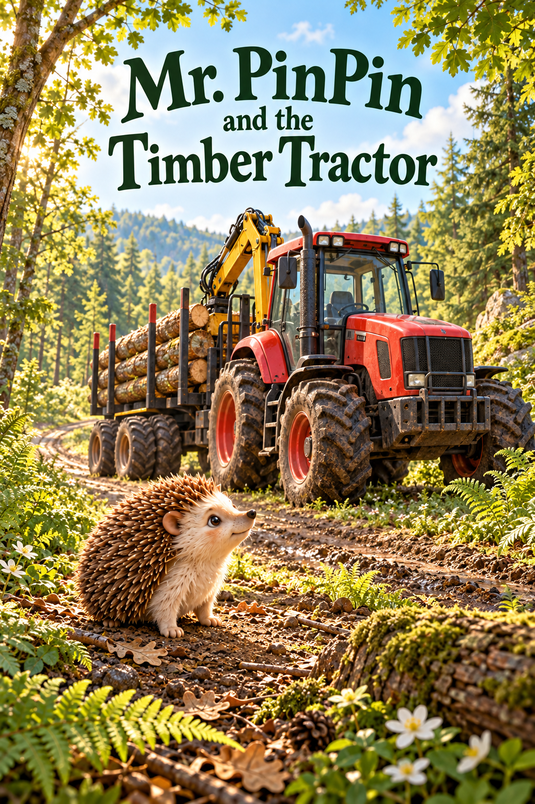
What I See
First cover candidate, awaiting Miguel's review. The title is legible and correctly spelled, with PinPin's cream face and brown quills retained. His gaze leads up toward the red tractor; the logs and yellow crane make the timber theme readable. Two foreleg attachments are visible; rear anatomy is mostly occluded and cannot be fully verified. Low perspective separates foreground character from the larger machine, but the intended 25 cm size is not measurable from this illustration. Bright fur and foliage retain visible texture. The far-right tractor tire approaches/is slightly cropped by the edge, so the request to frame the complete machine is not fully met. No extra character, costume or golden head ornament appeared. This is a direct cover concept, not an approved environment plate or a finished story.
Markdown record · Full-resolution image
{kind=link}
Exact Prompt
Use case: illustration-story. Create one polished portrait title illustration for a children's picture book, 1024 x 1536. Reference image 1 establishes ONLY Mr. PinPin's identity and the main book's detailed dimensional woodland rendering: compact brown quills, cream muzzle and belly, small glossy eyes, short natural paws, curious gentle expression. Reimagine the setting for this new standalone adventure. A low woodland camera, 20 cm above the ground with a moderately wide 35mm feel, looks along a fern-lined forest track. In the near foreground, Mr. PinPin stands naturally on four short legs in a three-quarter side view, head tilted up with delighted curiosity toward a parked red forestry tractor in the middle distance. His body is about 25 cm long; he stays genuinely hedgehog-sized, with perspective making his face readable. Two forelegs attach below his chest and two hindlegs below his haunches, with far-side legs naturally occluded. Warm, appealing animal face and natural posture. The tractor is shown clearly in front three-quarter view: rich red painted hood and cab, chunky dark rubber tires, realistic glass, a coupled timber trailer with a small load of bark-covered logs secured between metal stakes. A compact yellow log-loading crane is folded neatly behind the cab. The machine is stationary with empty cab. Give its shape readable, believable construction, not a vehicle with a face. The track curves into a living green forest. Fine moss, ferns, tiny white wildflowers and wheel impressions give the foreground tactile detail and a playful sense of scale. Beautiful dimensional storybook realism matching reference 1, detailed fur and quills, tangible bark and painted metal, softly directional morning sunlight with cool green shade. Retain texture in cream fur and bright leaves. A fresh balance of red tractor, yellow crane, green forest and pale blue sky. Keep PinPin and the complete machine clearly legible and in focus. Compose as a real flat front-cover illustration, not a photographed book mockup: image fills the page, branches frame an open pale sky area in the upper quarter, vehicle occupies the middle, PinPin anchors the lower foreground. Place beautiful readable dark forest-green storybook serif lettering in that open upper area, exact title only: "Mr. PinPin" "and the" "Timber Tractor" Mr. PinPin and Timber Tractor large, and the smaller. Comfortable outer margins. No subtitle or author name. One continuous illustration, no panels or border. PinPin wears no clothing or golden head ornament. He is the only animal.
References
- scene-10-v2.png: PinPin identity and main-book dimensional woodland rendering, not the same scene.
{kind=link}
Generation 2 / Reading position 1
Timber Tractor: Spanish cover
Localized lettering for the approved standalone story cover.
Camera. Preserve the approved portrait composition and framing exactly.
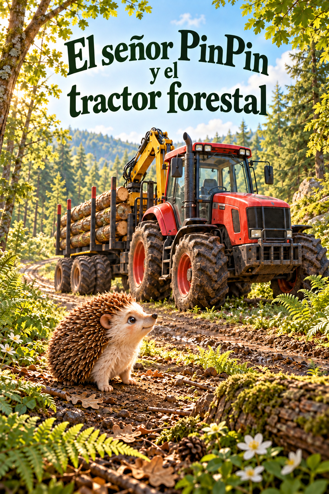
What I See
Lettering reads exactly 'El señor PinPin' / 'y el' / 'tractor forestal', with the tilde on señor and the requested lowercase third line. The three-line dark-green serif hierarchy fits the original sky area. PinPin's face, quills, natural paws, tractor, empty cab, crane, loaded trailer, forest and full portrait framing appear preserved on visual inspection; no new characters or costume. This is visual preservation, not a claim of pixel-identical non-text regions.
Markdown record · Full-resolution image
{kind=link}
Exact Prompt
Use case: text-localization. Edit the supplied approved portrait cover image. Produce exactly one Spanish localized cover, 1024 x 1536. Change ONLY the title lettering in the open sky at the top. Replace the English title with these exact three lines, preserving case, accents and punctuation: "El señor PinPin" "y el" "tractor forestal" Keep the same dark forest-green storybook serif lettering, three-line hierarchy and placement: first and third lines large, middle line small. Fit the longer localized words comfortably within the existing title area and margins; preserve the surrounding branches and sky. All non-lettering artwork must stay unchanged: the exact small natural hedgehog PinPin in the foreground, his face, quills, cream fur and paws; the red stationary tractor with empty cab, yellow crane and log trailer; the woodland, ferns, path, flowers, light, colors, texture, perspective and full uncropped framing. PinPin has no costume or golden ornament. Do not add a beaver, driver, any other character, object, subtitle, author name or border. This is only a lettering edit of the approved cover, not a new scene. Preserve the artwork and identity as faithfully as possible.
References
- title-v1.png: Sole edit target: approved cover artwork, identity, layout, colors and title lettering style.
Generation 3 / Reading position 3
The Tractor Around the Bend
An empty parked tractor waits at the start of the day, before loading timber.
Camera. 30 cm camera, 5 m front-left oftractor; fullmachineatright, emptycharacterpatchleft.
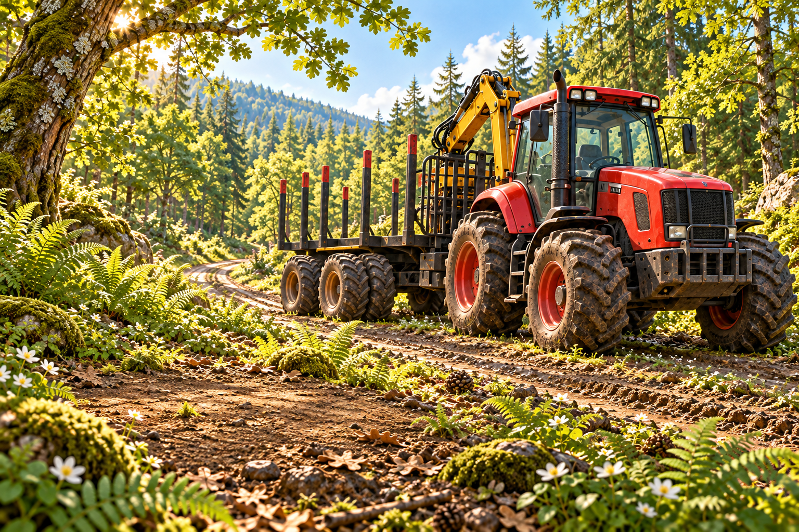
What I See
Clean plate accepted for character staging. Empty trailer/cab and open foreground are clear; no animals or lettering. Machinery retains cover's red/yellow identity. Far-right tire remains close to edge, not ideal complete-machine framing; no action is hidden. Foreground has room for both characters.
Markdown record · Full-resolution image
{kind=link}
Exact Prompt
Use case: illustration-story. Create a clean landscape environment plate, 1536x1024, for the same dimensional children's book as the reference cover. Keep the red tractor's design: red hood and enclosed glass cab, big treaded black tires with red hubs, compact yellow folding log crane behind cab, stake-sided logging trailer. Move the camera to 30 cm above the fern-lined forest track, about 5 metres in front-left of the tractor, looking back toward its front three-quarter side. Show the entire parked tractor and its EMPTY trailer in the right two-thirds of the frame, all tires within the frame; the yellow crane is folded. Leave the near-left third as a clear moss-edged earthen patch for characters to meet later, with tiny white flowers and detailed fern fronds at the edges. A mature oak frames the upper left and the trail bends behind the trailer. Soft morning sunlight, lively green forest shadows, pale blue through canopy, textured highlights. This is the beginning of the adventure before timber loading. Landscape and machinery only: cab empty, ground unoccupied, no animals or people. Single continuous illustration without any title, text, border or panels.
References
- title-v1.png: Approved machine and woodland rendering reference, not title/cast/loading state.
Generation 4 / Reading position 3
A New Driver
PinPin meets the beaver driver beside his parked empty timber tractor.
Camera. Same low front-left meeting plate; characters in foregroundleft notundertractor.
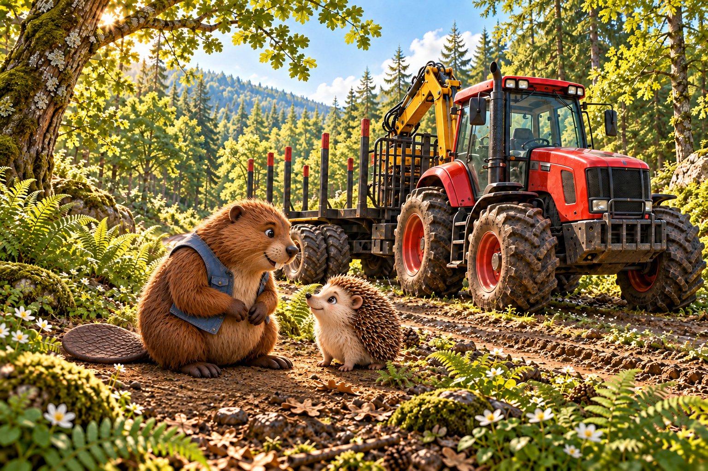
What I See
Cast anchor accepted for production review: beaver has broad paddle tail, rounded muzzle and two forepaws plus two hind feet; PinPin has two distinguishable forelegs with rear anatomy partly hidden. Friendly mutual gaze and separate silhouettes; empty trailer retained. Beaver body looks roughly two to three times PinPin's, not a measured scale. Both faces read clearly; no duplicate forelimb attachment identified.
Markdown record · Full-resolution image
{kind=link}
Exact Prompt
Use case: illustration-story. Add both characters together to reference 1's empty foreground; preserve its camera, forest, parked red tractor with EMPTY trailer, folded yellow crane, and exposure. Reference 2 supplies only PinPin's identity. On the clear earthen patch at lower-left, a friendly chestnut-brown BEAVER sits naturally on his haunches facing right toward PinPin. Beaver has a broad flat paddle tail lying behind him to the left, rounded small ears, wide rounded muzzle, two subtle visible front incisors, and a simple blue canvas work vest without trousers or shoes. His two forepaws rest naturally in front of his belly. He is about 75 cm nose-to-tail-root, a believable animal body rather than a human in costume. PinPin stands just to the beaver's right at about one third the beaver's body length, facing left and looking up at his new friend's face. Compact natural hedgehog: fine brown quills, cream muzzle and belly, short paws, friendly small glossy eyes, four natural limbs with far-side limbs naturally hidden. Both bodies are fully framed and clearly separated, safely away from the stationary wheels. Warm curious greeting through their head tilts. Same detailed dimensional woodland picture-book rendering, soft fur and textured cream highlights. 1536x1024 landscape, one continuous illustration, no text.
References
- meeting.png: Exact background camera and empty tractor state.
- scene-10-v2.png: PinPin identity only.
Generation 5 / Reading position 1
Timber Tractor: Russian cover
Localized lettering for the approved standalone story cover.
Camera. Preserve the approved portrait composition and framing exactly.
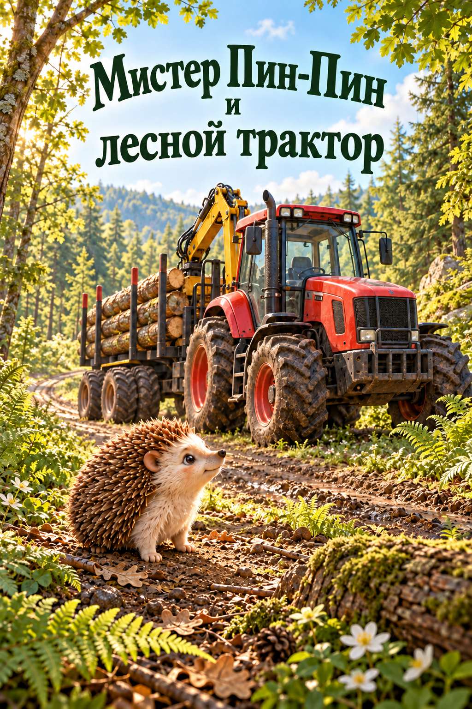
What I See
Lettering reads exactly 'Мистер Пин-Пин' / 'и' / 'лесной трактор', including the hyphen, Cyrillic й and requested lowercase third line. The dark-green serif title remains in three clear lines within the original sky area. PinPin's identity and natural anatomy, empty tractor cab, red machine, yellow crane, log trailer, forest, light and full portrait composition appear preserved on visual inspection; no additional character or costume. Visual inspection does not establish pixel-identical preservation outside the lettering.
Markdown record · Full-resolution image
{kind=link}
Exact Prompt
Use case: text-localization. Edit the supplied approved portrait cover image. Produce exactly one Russian localized cover, 1024 x 1536. Change ONLY the title lettering in the open sky at the top. Replace the English title with these exact three lines, preserving case, accents and punctuation: "Мистер Пин-Пин" "и" "лесной трактор" Keep the same dark forest-green storybook serif lettering, three-line hierarchy and placement: first and third lines large, middle line small. Fit the longer localized words comfortably within the existing title area and margins; preserve the surrounding branches and sky. All non-lettering artwork must stay unchanged: the exact small natural hedgehog PinPin in the foreground, his face, quills, cream fur and paws; the red stationary tractor with empty cab, yellow crane and log trailer; the woodland, ferns, path, flowers, light, colors, texture, perspective and full uncropped framing. PinPin has no costume or golden ornament. Do not add a beaver, driver, any other character, object, subtitle, author name or border. This is only a lettering edit of the approved cover, not a new scene. Preserve the artwork and identity as faithfully as possible.
References
- title-v1.png: Sole edit target: approved cover artwork, identity, layout, colors and title lettering style.
Generation 6 / Reading position 11
Footbridge before repairs: clean location plate
At a separate downstream location, three missing near-end deck boards need replacing.
Camera. Near-bank approach camera, 45 cm high, 32mm view toward opposite bank. Bridge angles from centre foreground to centre-right background; near-bank dry parking LEFT.
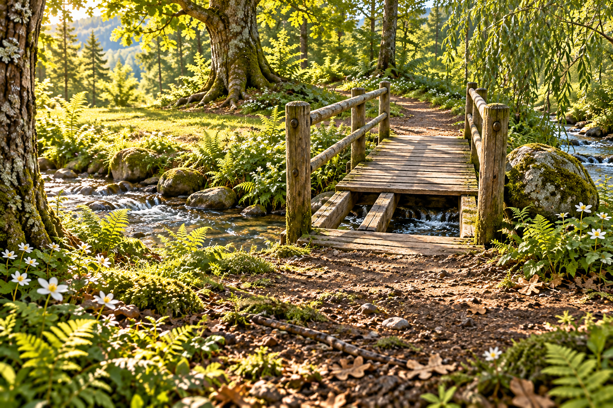
What I See
Inspected full 1536 x 1024 image. Attractive dimensional woodland, readable small footbridge, intact rails, modest near-end deck opening, gentle stream, and no animals or equipment. Warm highlights retain texture. Caveats: three longitudinal members appear visible rather than the requested two; exact count of three missing boards cannot be established from the opening. Boulder reads near-bank right rather than far-bank right. Largest left grass clearing reads across the stream, not a clearly usable near-bank tractor apron. Keep tractor on near-bank land in later framing; never place it on bridge. Plate is a continuity candidate with these explicit corrections for character finishing, not fully compliant approval.
Markdown record · Full-resolution image
{kind=link}
Exact Prompt
Use case: illustration-story. Create one landscape image, exactly 1536 x 1024 pixels, a polished dimensional children's picture-book environment. Match the approved cover's beautiful tangible woodland: detailed bark, moss, ferns and small white flowers, rich natural green shade, warm directional sunlight, realistic miniature-scale textures and readable depth. Preserve highlight detail; no blown-out white light. Landscape only: absolutely no animals, people, machinery, text, lettering, borders or panels. Transform the reference into a NEW stream crossing location, about 100 metres downstream from a windfallen-oak clearing (that clearing is out of sight). Physically position the camera on the NEAR BANK'S woodland approach track, 45 cm above ground, 32mm lens feel, looking toward the opposite bank. A modest wooden FOOTBRIDGE, only 2 metres span and 1 metre wide, crosses a narrow shallow gentle stream. Its deck angles from centre foreground to centre-right midground, with low simple natural wooden handrails on BOTH sides. Build it believably: two parallel sturdy natural-timber longitudinal stringers span the stream beneath transverse deck boards. Exactly THREE adjacent transverse deck boards are missing at the NEAR end, making a modest rectangular opening through which the TWO intact sound timber stringers and water are clearly visible. The remaining deck, all railings, posts, and banks are sound; no dramatic collapse or shattered wood. This is a small footbridge, unmistakably too narrow for a tractor. Establish continuity landmarks: a broad dry level grass-and-earth apron on the NEAR BANK LEFT of the bridge suitable for later tractor parking and unloading on LAND; a mossy oval boulder beside the far-bank right bridge post; an old oak on the far-bank left with an exposed root beside the path; slender willow foliage behind the far bank on the right. The narrow stream comes from foreground LEFT and flows under the bridge toward background RIGHT. The near-bank grassy edge extends upstream toward the camera-left side and will provide a picnic spot later. Give it welcoming healthy woodland, ferns, small white flowers and clear cool water. Soft warm morning sunlight from upper left, textured leaf highlights and open readable shadows. No animals, machinery, timber piles or picnic objects. No fallen tree at this site. No text. Keep space and construction plainly readable.
References
- title-v1.png: Woodland rendering and warm morning style only; omit its vehicle, animal and lettering.
Generation 7 / Reading position 2
Empty forest track
Enormous tire impressions suggest the distant tractor rumble.
Camera. Camera 8 cm above the track, moderate wide view following the curve right. Ferns frame the foreground.
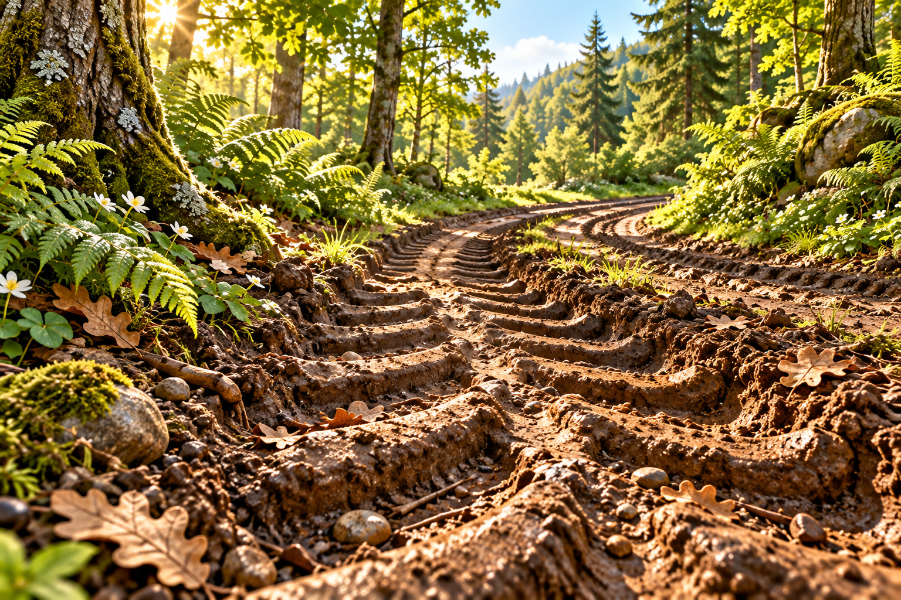
What I See
Inspected full image. Pass: very low soil-level perspective, enormous sharply readable tire impressions follow a rightward bend; tactile earth, ferns, moss and white flowers match approved woodland. Empty scene with no visible tractor, fauna or lettering. Sunlit foliage is bright but textured. Camera height is illustrative rather than measured.
Markdown record · Full-resolution image
{kind=link}
Exact Prompt
Use case: illustration-story. Create one landscape image, exactly 1536 x 1024 pixels, a polished dimensional children's picture-book environment. Match the approved cover's beautiful tangible woodland: detailed bark, moss, ferns and small white flowers, rich natural green shade, warm directional sunlight, realistic miniature-scale textures and readable depth. Preserve highlight detail; no blown-out white light. Landscape only: absolutely no animals, people, machinery, text, lettering, borders or panels. Transform the reference into a completely empty narrow forest track in bright morning light. Physically put the camera only 8 cm above the ground, with a 28mm lens feel. Huge, sharply readable tractor-tire tread impressions start in the near foreground and lead around a rightward bend, disappearing behind living ferns and trees. The prints feel enormous from a hedgehog's eye height. Include tactile soil, tiny stones, oak leaves, moss and delicate fern fronds close to the lens. Midground and bend remain legible; no fog or heavy blur. The forest is healthy and welcoming. No tractor visible anywhere, no distant vehicle silhouette, no fauna, no sound-effect lettering. One continuous full-bleed illustration.
References
- title-v1.png: Approved dimensional woodland rendering and morning light only.
Generation 8 / Reading position 5
Inside the Cab
An empty passenger space and driver seat establish the riding arrangement.
Camera. View through open right cab door at seatheight looking diagonally toward frontleft windshield.
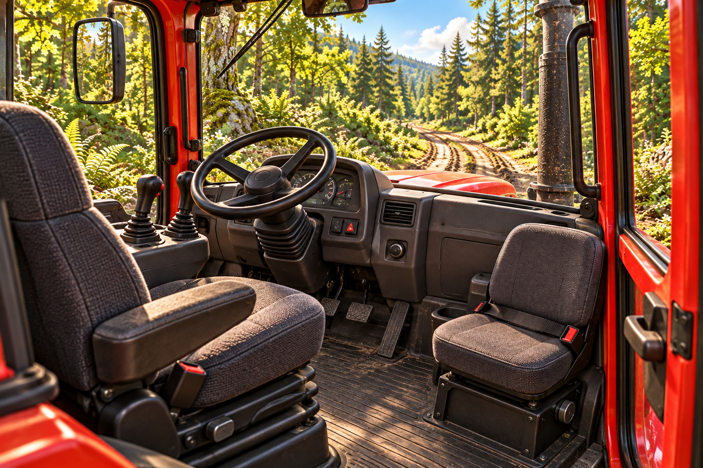
What I See
Clean interior accepted: left driver seat/right smaller passenger seat, steering wheel, controls and belts are legible; no animals. Soft textured interior and forest match the machine. Doorway-view camera is plausible, not a calibrated reconstruction. Driver seatback is partly cropped by this intentional close interior view.
Markdown record · Full-resolution image
{kind=link}
Exact Prompt
Use case: illustration-story. Move the camera from beside this red tractor into its cab, viewing through the open right-hand door at seat height, looking diagonally toward the front windshield. Create a clean empty interior plate. The main dark padded driver's seat is on the LEFT behind the black steering wheel; on the RIGHT is a small properly mounted passenger seat with a cushion and visible lap belt, sized for a little hedgehog. Simple sturdy real tractor interior: rubber floor, red painted door frame, clear windshield, modest dashboard, steering column, two crane-control joysticks beside the main seat, no readable labels. Leave clear seating space for a beaver driver and a much smaller hedgehog passenger to be added later. Through the windshield see the same green sunlit fern-lined forest track and a little red hood below it. Frame both seats fully, close and welcoming, with natural soft reflected light and detailed textured highlights matching the reference's dimensional children's-book style. No animals, people, text or panels. Single landscape1536x1024.
References
- meeting.png: Red tractor identity and morning location.
Generation 9 / Reading position 4
Windfallen oak beside the stream
A recent natural windfall will supply the timber for the bridge repair elsewhere downstream.
Camera. Camera 35 cm above a streamside clearing, moderately wide. Exposed roots left; stream runs foreground-left toward background-right.
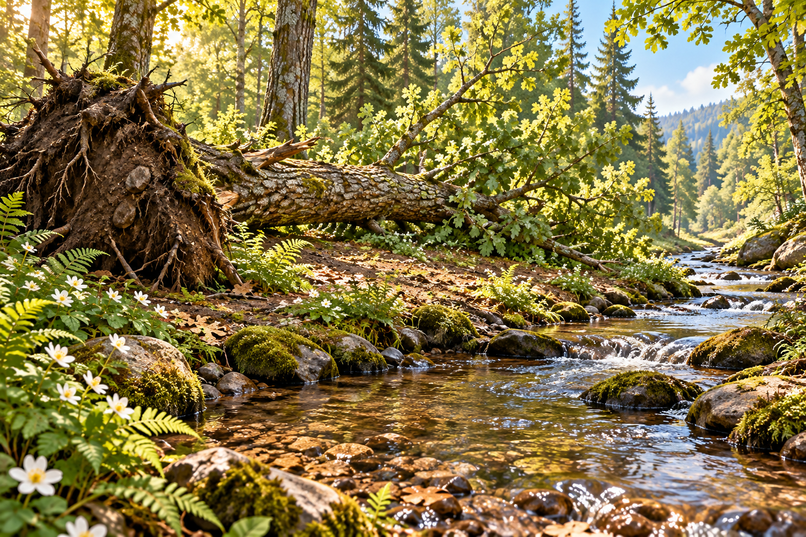
What I See
Inspected full image. Pass: exposed root-and-earth plate at left, rough natural torn branches, leafy fallen oak lying on land beside the stream, no saw-cut stump, animals, machinery or bridge damage. Woodland and controlled bright texture match the cover. Caveat: stream occupies foreground centre/right rather than strictly foreground left, then recedes to background right; reference establishes a plausible clearing, but exact requested diagonal was not achieved. Flow direction itself cannot be proven from this still.
Markdown record · Full-resolution image
{kind=link}
Exact Prompt
Use case: illustration-story. Create one landscape image, exactly 1536 x 1024 pixels, a polished dimensional children's picture-book environment. Match the approved cover's beautiful tangible woodland: detailed bark, moss, ferns and small white flowers, rich natural green shade, warm directional sunlight, realistic miniature-scale textures and readable depth. Preserve highlight detail; no blown-out white light. Landscape only: absolutely no animals, people, machinery, text, lettering, borders or panels. Transform the reference into a quiet streamside woodland clearing, viewed from a camera 35 cm above the ground with a 35mm lens feel. A single recently windfallen oak lies on the forest bank, clearly naturally uprooted: exposed earth-and-root plate at the LEFT edge, rough bark-covered trunk extending toward centre-right on dry land, a few naturally torn branch ends and leafy branches. Its toppling was caused by wind. No clean saw-cut trunk end, no felled stumps, no logging damage to living trees. The gentle shallow stream travels diagonally from FOREGROUND LEFT toward BACKGROUND RIGHT, curving beyond the clearing. Keep the fallen trunk beside the water rather than spanning it. Show healthy mixed woodland on both banks, mossy stones, lush ferns, small white wildflowers, filtered morning sun and readable shade. This is the windfall clearing, about 100 metres upstream of a different bridge site. There is NO bridge visible, no bridge damage, no animals, no machinery, no text. Keep the whole fallen tree readable and enough clear earth near the trunk for a later conversation, though this image itself stays empty.
References
- title-v1.png: Approved woodland style, texture and morning exposure only.
Generation 10 / Reading position 5
A Seat Beside the Driver
PinPin rides safely beside the beaver driver.
Camera. Same cabplate camera, closer view of passengers fromopenright doorway while parked.
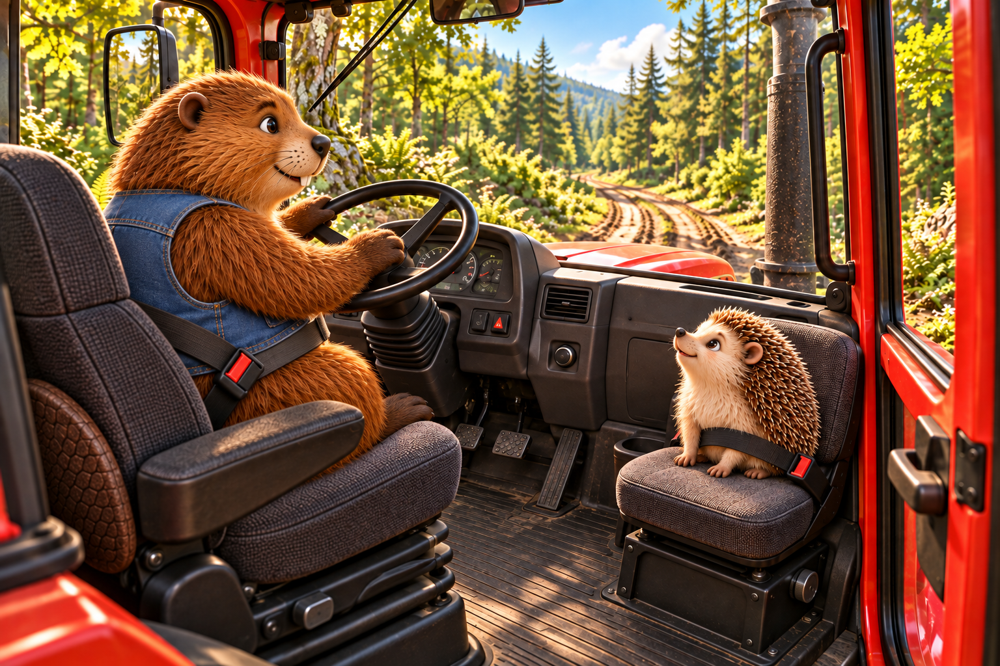
What I See
Accepted riding reference: beaver left and much smaller PinPin right, separate seats and fastened lap belts visible, two forepaws on wheel, PinPin two forelegs plus a visible rear paw. Faces retain anchor character. Far hindlimbs and pedal operation are obscured and cannot be verified; beaver's visible hind foot rests near seat edge. PinPin looks up toward driver/windshield, a slightly different gaze from planned straight ahead.
Markdown record · Full-resolution image
{kind=link}
Exact Prompt
Use case: illustration-story. Add the two friends from reference 2 to the clean tractor cab of reference 1, preserving the camera, seats, controls, lighting and forest outside. The chestnut beaver with small rounded ears, broad muzzle, subtle incisors and blue canvas vest sits properly in the LEFT driver's seat, a lap belt around his middle. His TWO forepaws rest on opposite sides of the steering wheel; his hind feet are below the dashboard, his paddle tail rests naturally behind him beside the seat. Keep his friendly beaver face in three-quarter view, looking ahead toward the path. Tiny Mr. PinPin sits in the RIGHT small passenger seat on its cushion, lap belt fastened low, roughly a third of the beaver's body size. PinPin's two short forepaws rest on the cushion and his hind paws are tucked naturally under him; his delighted face looks up through the windshield, not at the viewer. Preserve soft cream face, fine brown quills and natural compact hedgehog body. The tractor is parked for this boarding moment, and their seats remain distinct. Warm high-detail dimensional children's-book rendering, beautiful faces and clearly attached limbs. Single landscape1536x1024, no text.
References
- cab.png: Exact empty interior and driver/passenger arrangement.
- scene-03.png: Both character identities and relative size only.
Generation 11 / Reading position 15
Upstream picnic bank: repaired bridge plate
The repair is finished; a peaceful bank beside the intact bridge awaits the picnic.
Camera. Move physically 2 metres upstream along the SAME near bank, lower to 25 cm, turn downstream toward the bridge. Foreground grass left/right, repaired bridge middle background.
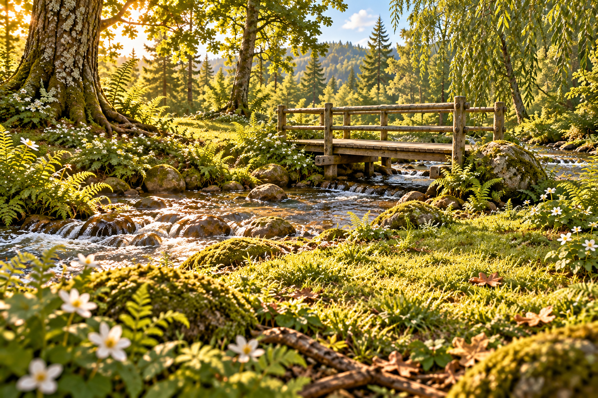
What I See
Inspected full image. Pass: character-free grassy near-bank foreground, recognizable small fully repaired bridge in middle background, side-oblique new camera view rather than crop, oak/root and mossy boulder landmarks, willow at right, soft warm late-afternoon woodland. No machinery, mat or props. Continuous deck visible. Camera distance and flow direction are illustrative, not metrically proven; strongest light is warm but grass and leaf detail remain legible.
Markdown record · Full-resolution image
{kind=link}
Exact Prompt
Use case: illustration-story. Create one landscape image, exactly 1536 x 1024 pixels, a polished dimensional children's picture-book environment. Match the approved cover's beautiful tangible woodland: detailed bark, moss, ferns and small white flowers, rich natural green shade, warm directional sunlight, realistic miniature-scale textures and readable depth. Preserve highlight detail; no blown-out white light. Landscape only: absolutely no animals, people, machinery, text, lettering, borders or panels. Reference image 1 is the SAME bridge location before repair; reference image 2 is only the approved book's rendering style. Make a physically new view of reference 1, not a crop: walk the camera TWO METRES UPSTREAM along the SAME NEAR BANK toward its left grassy edge, lower the camera to 25 cm, and turn to look DOWNSTREAM. The same little wooden footbridge must now appear in the MIDDLE BACKGROUND, viewed more from its side at an oblique angle. Keep its 2 metre span, 1 metre width, simple timber rails on both sides, two longitudinal timber stringers, same posts and construction. The THREE missing near-end deck boards have now been replaced by matching sound boards: its entire deck is continuous, fully repaired and safe. No remaining hole or broken plank. Preserve the bridge plate's geography, adjusted only by real camera parallax: same gentle narrow stream, same mossy oval boulder at the far-bank right bridge post, same old oak and exposed root on the far-bank left, willow foliage behind the far-bank right. Water flows from near left foreground toward the bridge and downstream right. Let foreground be the SAME near bank's soft grass beside the water: open usable grass foreground LEFT for a future beaver and foreground RIGHT for a future small hedgehog, both on dry land. Show an inviting calm stream bank, detailed ferns, moss and small white flowers. Empty environment only, no characters, tractor, equipment, mats, food, baskets or twigs arranged as props. Soft LATE-AFTERNOON sunlight, warmer and gentler than the bridge plate but retain rich green shade and all highlight detail. The intact bridge remains recognizable and visible behind the picnic space. No text or lettering.
References
- bridge.png: Exact bridge design, banks, stream and continuity landmarks; new physical camera view, repaired deck and later light.
- title-v1.png: Approved dimensional woodland texture and controlled rich color only.
Generation 12 / Reading position 6
The Clearing for the Crane
Prepared logs wait beside the stationary timber tractor.
Camera. Camera1mhighsideviewlookingalongriverbank, entiretractorlefttrailercenter logsright.
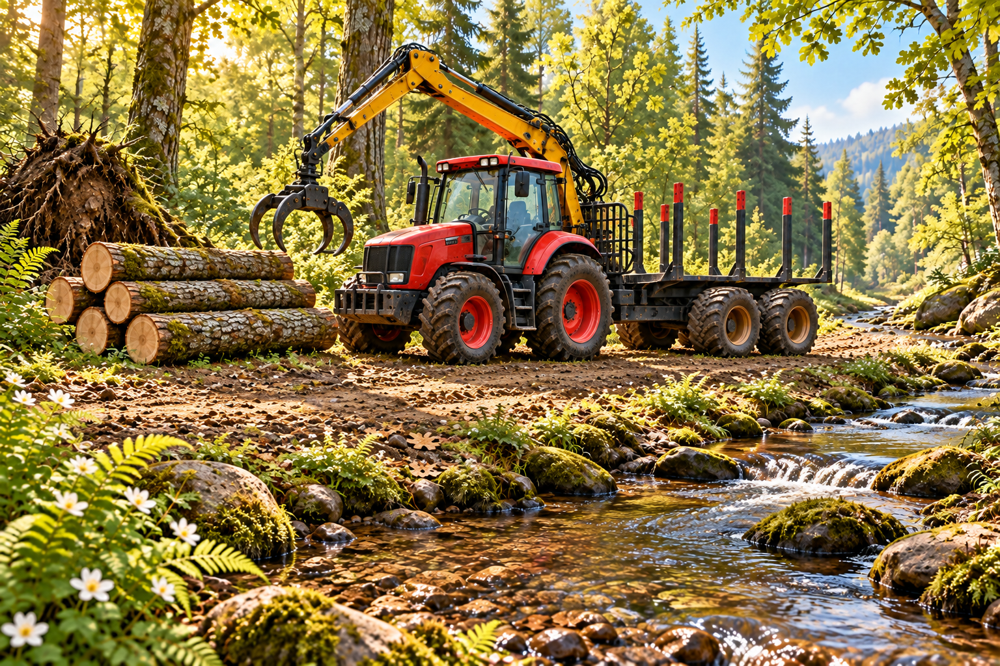
What I See
Accepted working location: empty cab/trailer and intact living trees, cut logs beside original root ball, stream along near-right. Crane base behind cab and open grapple readable. Five log ends appear instead of requested four; prose intentionally does not specify count. This is a new staging view, not exact metric reconstruction.
Markdown record · Full-resolution image
{kind=link}
Exact Prompt
Use case: illustration-story. Make a clean machinery-and-landscape plate for the next stage at reference 1's fallen-oak clearing. The fallen trunk has now been prepared into four short bark-covered logs laid neatly on firm ground on the LEFT bank, away from the water. Keep the uprooted root mass behind them to show where the wood came from. Place reference 2's red tractor on the dry access track beside these logs, pointing LEFT; its empty logging trailer extends toward the RIGHT. The same yellow articulated log crane is mounted between cab and trailer and partly raised, its empty grapple hovering over the ground logs. The tractor is parked, wheels still, cab empty. Camera 1 metre high, wide side three-quarter view from across the clear working patch, framing the complete machine and logs with the stream along the lower-right edge. Living trees remain untouched. Detailed fern-rich dimensional woodland children's-book style, soft late-morning sunlight, textured highlights. No animals, people, lettering or panels. Landscape1536x1024.
References
- scene-04.png: Windfallen oak clearing, stream and root ball geography.
- meeting.png: Machine identity, emptytrailer and yellowcrane.
Generation 13 / Reading position 6
A Very Useful Yellow Hand
The beaver uses the crane while PinPin watches safely from the cab.
Camera. Moveclose tologpile at0.6m, grapplingloginforegroundleft, cabbackgroundright.
What I See
Accepted crane close-up: grapple visibly grips one horizontal log, machine parked, both characters inside cab and no one under the load. Character faces are small; beaver's incisors/tail and belts are not fully legible from this external angle, so identity relies partly on blue vest and earlier close view. Crane joints and contact with log are plausible illustration, not a mechanical engineering certification.
Markdown record · Full-resolution image
{kind=link}
Exact Prompt
Use case: illustration-story. Move the camera in reference 1 to log height, 60 cm above the ground close to the timber pile, for an intimate close view of the crane doing its job. The yellow crane's black curved grapple jaws firmly encircle ONE horizontal oak log at its middle and lift it only a short distance above the other logs. Show the bark, clean cut end and well-connected metal joints clearly. Foreground grapple and log are the main subject; the parked red tractor cab is visible farther back at right, with reference 2's chestnut beaver in blue vest operating the control levers from the driver's seat and tiny cream-faced brown-quilled PinPin watching from his separate small passenger seat. Both remain inside the cab, belted. Their faces may be small but recognizable through clear glass. Keep the working area empty around the suspended wood. Same root-ball clearing, fern-rich forest and stream beyond, gently sunlit dimensional children's-book rendering. A real loading crane, not an excavator bucket. Clear continuous composition, landscape1536x1024, no words or panels.
References
- loading.png: Working clearing andmachine.
- scene-05.png: Driver/passenger identity and seating only.
Generation 14 / Reading position 11
Unloading on firm ground
Beaver parks; PinPin remains in the cab while timber is set on the bank.
Camera. Retreat 4 metres along near-bank track, 70 cm camera, 32mm wide. Parked tractor LEFT; damaged footbridge RIGHT.
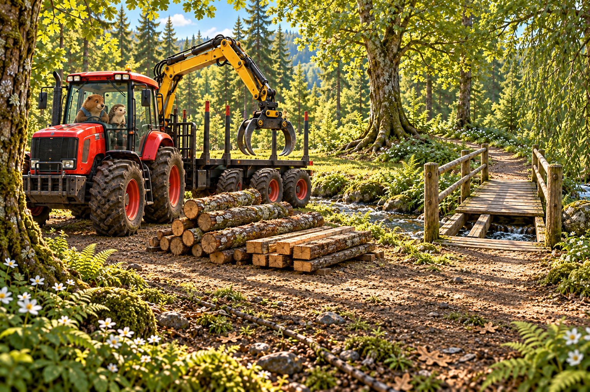
What I See
Inspected full image. Pass: tractor and empty trailer clearly parked LEFT on dry near-bank land, stack of logs/prepared timber fully supported on same bank, empty open grapple, bridge separate on right with modest near-end opening and two prominent intact stringers. Both cast members remain in cab; Beaver left, small PinPin right. No animal near loading machinery or tractor on bridge. Faces and blue vest remain recognizable. Cab distance and body occlusion prevent full seat-belt and limb-attachment verification; no duplicated visible limb attachments detected. PinPin remains smaller than Beaver. Technical axle configuration is illustrative.
Markdown record · Full-resolution image
{kind=link}
Exact Prompt
Use case: illustration-story. Create ONE finished landscape story illustration, exactly 1536 x 1024 pixels. Detailed dimensional woodland picture-book realism, tactile bark, fur, quills, moss and ferns. Keep rich green shade and gentle warm sunlight, no blown highlights. No text, speech bubbles, borders or panels. Reference 1 establishes bridge location; reference 2 cast and vehicle; reference 3 safe cab seating. Identity: Mr. PinPin is a small natural hedgehog about 25 cm long, compact brown quills, cream muzzle, belly and short paws, glossy dark eyes and a gentle curious face. He has exactly two forelegs below his chest and two hindlegs below his haunches, far limbs may be naturally occluded. No clothes or golden ornament. Beaver has warm chestnut fur, small round ears, two small incisors, broad flat scaly tail emerging once from his rump, a simple blue work vest, natural rounded non-human animal body with two forelimbs and two hindlimbs. Beaver is roughly twice PinPin's body length, not a human in fur. Tail is not an extra leg. Match the cast reference closely. Natural modest expressions, no huge cartoon grin. Move the camera FOUR METRES BACK on the approach track to reveal a broad firm dry apron in the near-bank LEFT foreground. The red timber tractor and attached trailer are parked entirely on that LEFT apron, parallel to the stream, all tires clearly on soil, well clear of the water. Bridge sits smaller at RIGHT across the narrow stream, still with the modest missing near-end deck boards and otherwise sound rails. Clarify its support as two sound longitudinal timber stringers, not three. Show the END of unloading: a neat little stack of windfallen bark-covered logs and prepared bridge planks lies fully supported on the dry near-bank ground between tractor and bridge, safely beside the track. Trailer is now EMPTY. Yellow crane's open empty grapple has just released the stack and is held above the pile; nothing hangs over any animal. Beaver LEFT and small PinPin RIGHT are both visible through the cab glass, securely seated as in reference 3; beaver works the crane controls and PinPin stays in his fitted passenger seat. No character outside the cab. Entire unloading area is on the same NEAR bank as camera, never the opposite grass clearing. Tractor is much wider than the little pedestrian footbridge and never touches or crosses it. Healthy woodland, warm daytime light. Readable mechanical geometry, empty trailer and grounded timber pile.
References
- bridge.png: Bridge location, woodland, rails and stream; apply requested repair state and physical framing.
- scene-03.png: Shared cast identity, relative scale, blue vest and tractor design.
- scene-05.png: Cab seating: beaver driver LEFT, small PinPin belted passenger RIGHT.
Generation 15 / Reading position 12
One gap for a small paw
Repairs are nearly complete; PinPin notices a final short narrow gap at the approach.
Camera. 35 cm camera, close medium view of near-end deck and dry bank; beaver LEFT and PinPin RIGHT.
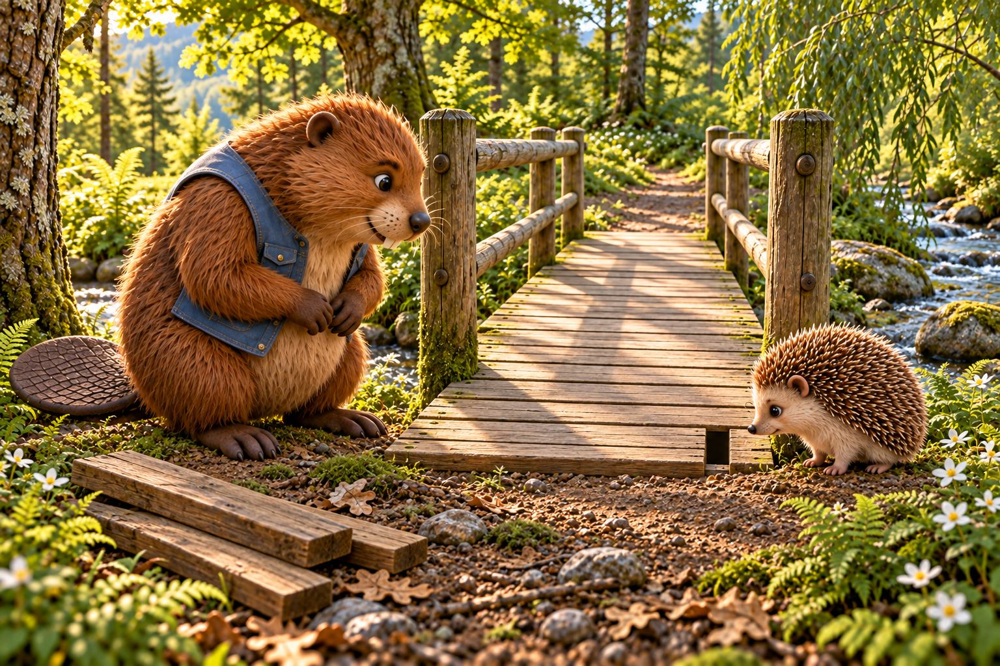
What I See
Inspected full image. Pass: bridge deck nearly complete with one small narrow opening at near RIGHT threshold; Beaver left and PinPin right both safely on dry bank looking at it. Two Beaver forelimb attachments, two hind feet and one distinct broad tail visible; no duplicated limbs. PinPin has two visible forepaws and one near hind paw, far hind leg naturally hidden by body, so hidden attachment unverified. Hedgehog remains small, unclothed, and naturally low; scale consistent with cast. No machinery. Repair continuation should preserve the gap at near RIGHT corner.
Markdown record · Full-resolution image
{kind=link}
Exact Prompt
Use case: illustration-story. Create ONE finished landscape story illustration, exactly 1536 x 1024 pixels. Detailed dimensional woodland picture-book realism, tactile bark, fur, quills, moss and ferns. Keep rich green shade and gentle warm sunlight, no blown highlights. No text, speech bubbles, borders or panels. Reference 1 supplies the small bridge location; reference 2 supplies the cast. Identity: Mr. PinPin is a small natural hedgehog about 25 cm long, compact brown quills, cream muzzle, belly and short paws, glossy dark eyes and a gentle curious face. He has exactly two forelegs below his chest and two hindlegs below his haunches, far limbs may be naturally occluded. No clothes or golden ornament. Beaver has warm chestnut fur, small round ears, two small incisors, broad flat scaly tail emerging once from his rump, a simple blue work vest, natural rounded non-human animal body with two forelimbs and two hindlimbs. Beaver is roughly twice PinPin's body length, not a human in fur. Tail is not an extra leg. Match the cast reference closely. Natural modest expressions, no huge cartoon grin. Later at the SAME near end of the little bridge, move camera close to the approach at 35 cm height. Most repair is complete: fresh matching wood forms a solid continuous deck except ONE SMALL NARROW rectangular gap at the near threshold, just a short paw-width gap along one approach corner, big enough for tiny PinPin's paw but not a dramatic open hole. Intact simple wooden rails, gentle stream below. Beaver waits on dry bank LEFT, his compact natural body and broad flat tail visible, gazing at the gap. PinPin stands naturally on short legs on dry bank RIGHT, safely back from the gap, nose and curious gaze directed down at this small missed opening. His whole body is much smaller than Beaver. No one stands over an open hole. Beaver's two forepaws rest naturally in front of his body, two hind feet beneath him; tail lies behind. A few neatly arranged spare short boards on the bank, no moving machinery, no tools in motion. Tractor out of frame. Friendly focused expressions, warm daylight, readable modest defect at the near threshold.
References
- bridge.png: Bridge location, woodland, rails and stream; apply requested repair state and physical framing.
- scene-03.png: Shared cast identity, relative scale, blue vest and tractor design.
Generation 16 / Reading position 7
One Log, Then Another
The crane lowers wood into the stake trailer.
Camera. Walkcamera8m torear-right sideoftrailer, slightlyelevated1.5mlookingacrossloadtocab.
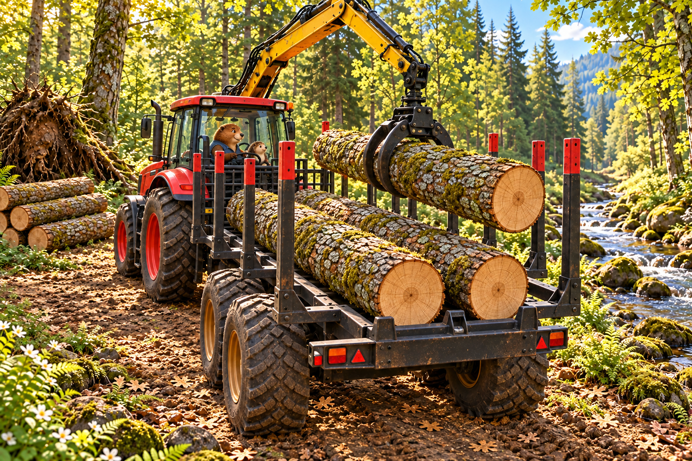
What I See
Accepted wide loading frame: two logs seated between trailer stakes, third held by connected grapple; both friends inside cab and no ground-level exposure to load. Driver is turned toward rear work, appropriate for loading. Steering/control details differ from interior reference, so this establishes illustrative action rather than an exact control layout. The crane tip is clipped at top by the chosen close-wide framing; load and grip remain fully visible.
Markdown record · Full-resolution image
{kind=link}
Exact Prompt
Use case: illustration-story. At reference 1's exact woodland logging clearing, walk the camera around to the trailer's REAR-RIGHT corner, 1.5 metres high, looking diagonally along its open bed toward the tractor cab. Show the next loading step clearly: TWO oak logs already lie lengthwise on the trailer bed BETWEEN its stakes, and the yellow crane lowers a THIRD bark-covered log gently beside them, securely held at its middle by the black grapple. This is a deliberate wide view of the whole trailer and articulated crane, with red tractor cab beyond at left, root mass and remaining ground logs farther left, narrow stream beyond right. Both friends from reference 2 remain in their seats inside the parked cab: beaver driver in blue vest at crane controls, small PinPin watching. Small readable faces through glass; nobody outside. Log scale and weight feel substantial, tyres planted on dry bank, no motion blur. Detailed storybook realism, cool green shadows and soft late-morning light, textured bark/steel/rubber. Landscape1536x1024, continuous single scene, no text.
References
- loading.png: Sameworkinglocation,machineandemptyloading baseline.
- scene-05.png: Caboccupantsidentityandseats.
Generation 17 / Reading position 13
The short plank
Beaver fits the final short plank while PinPin waits clear.
Camera. 45 cm near-bank camera, medium side-oblique shot. Beaver left at threshold, PinPin right behind on bank.
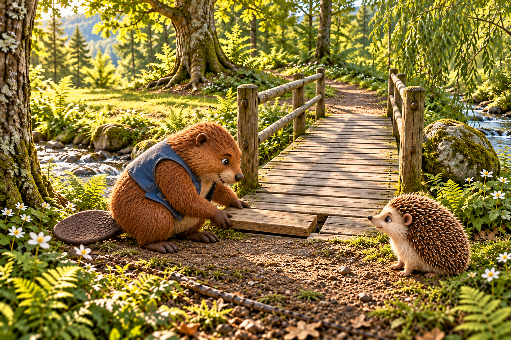
What I See
Inspected full image. Pass: Beaver crouches LEFT on land and uses two visibly attached forepaws to lower a finishing plank; two hind feet and one distinct broad tail visible. PinPin waits RIGHT, safely back on dry bank, with naturally short visible forelegs; hind attachments hidden by body, not fully verifiable. No extra limbs detected. Rest of deck and rails intact. Caveat: short plank renders about half bridge-width, longer than the requested 35 cm; threshold opening is more central and wider than scene-12's small right-corner gap. Action and safe waiting read clearly, but exact gap continuity is imperfect.
Markdown record · Full-resolution image
{kind=link}
Exact Prompt
Use case: illustration-story. Create ONE finished landscape story illustration, exactly 1536 x 1024 pixels. Detailed dimensional woodland picture-book realism, tactile bark, fur, quills, moss and ferns. Keep rich green shade and gentle warm sunlight, no blown highlights. No text, speech bubbles, borders or panels. Reference 1 establishes the bridge location, reference 2 the cast. Apply the nearly complete repair state. Identity: Mr. PinPin is a small natural hedgehog about 25 cm long, compact brown quills, cream muzzle, belly and short paws, glossy dark eyes and a gentle curious face. He has exactly two forelegs below his chest and two hindlegs below his haunches, far limbs may be naturally occluded. No clothes or golden ornament. Beaver has warm chestnut fur, small round ears, two small incisors, broad flat scaly tail emerging once from his rump, a simple blue work vest, natural rounded non-human animal body with two forelimbs and two hindlimbs. Beaver is roughly twice PinPin's body length, not a human in fur. Tail is not an extra leg. Match the cast reference closely. Natural modest expressions, no huge cartoon grin. At the near-bank bridge threshold, all of the repaired deck is already sound except a small SHORT narrow opening at the near RIGHT approach corner, as viewed from the original near-bank track. Beaver at LEFT crouches naturally on his two hind feet on firm dry ground, broad tail resting behind on land. With exactly two short forepaws, he lowers ONE short wooden plank precisely into that small last threshold opening. The plank is a small finishing piece, about 35 cm long, not a whole bridge or long beam. Show both forepaw attachments clearly, two hind feet supporting him, one broad flat tail. Gentle capable concentration. Little PinPin waits at RIGHT on dry grass a safe body-length back from the work, paws on ground, watching Beaver; no paw reaches toward the plank and he is not on the bridge. Close medium side-oblique camera at 45 cm height makes plank, paws and threshold legible, with intact rails and gentle stream establishing the location. No active crane or machinery; tractor outside frame. The rest of the bridge is complete and unchanged. Warm controlled daylight.
References
- bridge.png: Bridge location, woodland, rails and stream; apply requested repair state and physical framing.
- scene-03.png: Shared cast identity, relative scale, blue vest and tractor design.
Generation 18 / Reading position 8
Wooden Passengers
The load is securely strapped and the crane folded before travel.
Camera. Closealongside trailerload at1.2m showing barkstraps stakes, cabnotinframe.
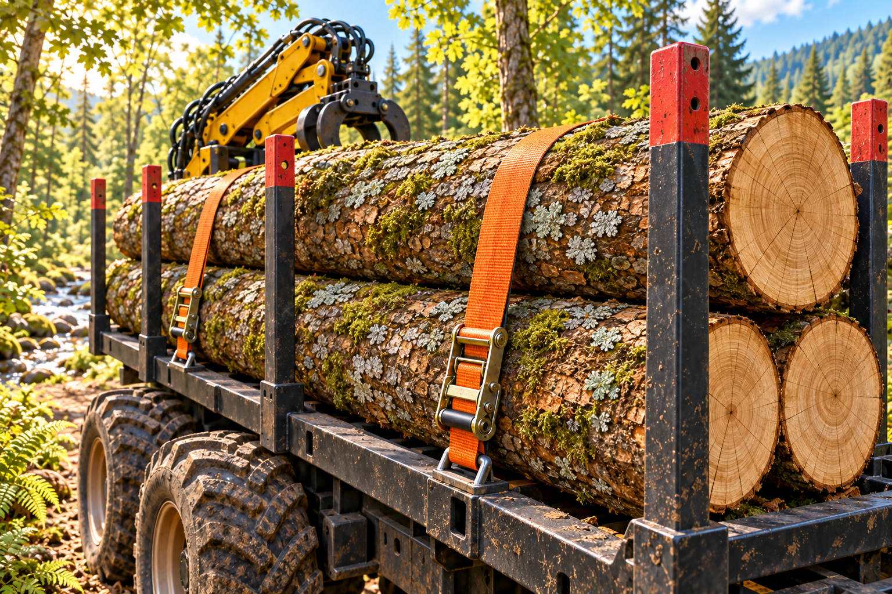
What I See
Accepted securing detail after one logged network failure and unchanged-prompt retry. Two straps and ratchets contact the load and trailer rails; folded crane and stowed empty grapple readable. Three front-facing log ends appear rather than the prompt's four, matching the previous image's two loaded plus one lowered; prose leaves count open. No characters. Mechanical fastening is illustrative, not certified load restraint.
Markdown record · Full-resolution image
{kind=link}
Exact Prompt
Use case: illustration-story. Show a satisfying close-up of the completed timber load on this tractor's stake-sided trailer before departure. Camera at the height of the trailer bed looking obliquely along the bark-covered oak logs. FOUR short heavy logs lie lengthwise, snugly contained between the steel side stakes. TWO broad dark-orange securing straps run across the whole log bundle and down to visible metal ratchet fasteners anchored to the trailer rails. Show clean cut ends, growth rings, lichen, bark texture and firm strap contact with the wood. Farther back above the front end of the load, the compact yellow loading crane is folded and its empty grapple stowed. Crop away the cab and all characters; this scene is about the timber and its secure fastenings. Soft forest greenery, fern edges and warm late-morning reflected light from the same woodland working site. Detailed dimensional children's-book realism, no oversized white highlights. Landscape1536x1024, one illustration with no title, labels or panels.
References
- loading.png: Clean machine and site baseline.
- title-v1.png: Approvedloadedtrailertextureandfoldedcrane,machine only.
Generation 19 / Reading position 14
First crossing
Small PinPin crosses the completed footbridge first while Beaver remains on the bank.
Camera. Low 25 cm camera beside far-bank landing looking along bridge back toward near bank.
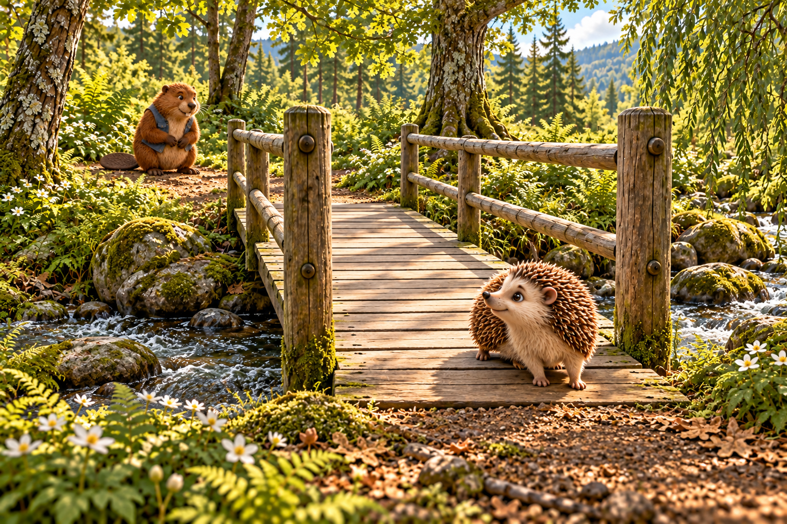
What I See
Inspected full image. Pass: PinPin first crosses continuous fully repaired deck at foreground landing; Beaver stays on dirt beyond opposite landing, no machinery on bridge. Low reverse viewpoint, small hedgehog relative to deck/rails, natural four-leg posture with two forelegs and two rear paw positions visible, no extra attachments detected. Beaver has two forepaws, two hind feet and separate single flat tail at distance. Friendly understated faces and blue vest consistent. Hedgehog legs look slightly longer than anchor but remain animal-proportioned. Exact reversal of woodland landmark positions is approximate.
Markdown record · Full-resolution image
{kind=link}
Exact Prompt
Use case: illustration-story. Create ONE finished landscape story illustration, exactly 1536 x 1024 pixels. Detailed dimensional woodland picture-book realism, tactile bark, fur, quills, moss and ferns. Keep rich green shade and gentle warm sunlight, no blown highlights. No text, speech bubbles, borders or panels. Reference 1 is the bridge's geography and design before repair; it is now FULLY REPAIRED. Reference 2 establishes cast identity and scale. Identity: Mr. PinPin is a small natural hedgehog about 25 cm long, compact brown quills, cream muzzle, belly and short paws, glossy dark eyes and a gentle curious face. He has exactly two forelegs below his chest and two hindlegs below his haunches, far limbs may be naturally occluded. No clothes or golden ornament. Beaver has warm chestnut fur, small round ears, two small incisors, broad flat scaly tail emerging once from his rump, a simple blue work vest, natural rounded non-human animal body with two forelimbs and two hindlimbs. Beaver is roughly twice PinPin's body length, not a human in fur. Tail is not an extra leg. Match the cast reference closely. Natural modest expressions, no huge cartoon grin. Physically take camera to just beside the FAR-BANK landing, lower it to 25 cm and look back diagonally along the little bridge toward the original near bank. PinPin goes first: show the small natural hedgehog on all four short legs finishing his crossing on the last intact deck boards by this far landing, turning his head back with a pleased gentle expression toward Beaver. His body remains about 25 cm long compared with the 1 metre-wide footbridge, not filling its width. Full bridge is safe and continuous: fresh matching boards cover EVERY gap, no missing slat anywhere, solid rails on both sides. Beaver stays on the original NEAR bank beyond the opposite end, larger species but naturally smaller through distance, calmly watching PinPin. Beaver must remain on soil beyond the bridge, not walking behind him on its deck. Gentle stream clearly passes beneath. No tractor on or near bridge deck, no machinery in frame. Natural four-leg hedgehog anatomy, no duplicated paws or extra limbs. Warm afternoon light, same oak/willow/mossy-stone woodland, readable complete crossing.
References
- bridge.png: Bridge location, woodland, rails and stream; apply requested repair state and physical framing.
- scene-03.png: Shared cast identity, relative scale, blue vest and tractor design.
Generation 20 / Reading position 9
The Woods Have Grown Shorter
PinPin enjoys a high view as the timber tractor travels slowly through the forest.
Camera. Moveofftrack intoferns at0.25m, frontthreequarterviewofapproachingtractor at6m distance.
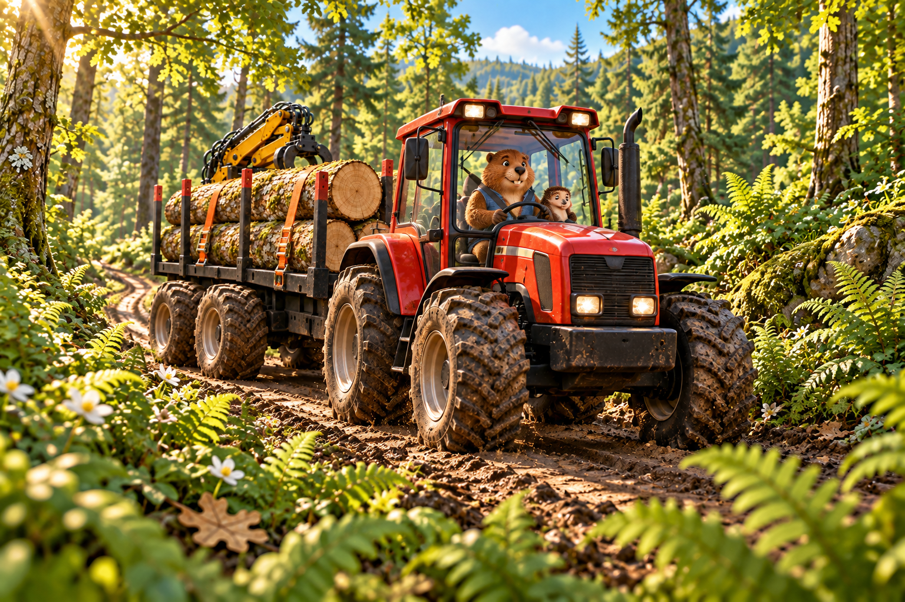
What I See
Accepted forest travel: full tractor/trailer framed, folded crane, secured logs, beaver driver and small PinPin safely in cab. Foreground ferns give low viewpoint and depth. Body/face details inside cab are limited; no extra forelimbs confirmed. Front grille/headlamp arrangement and wheel-hub colors drift from the cover, a machinery-continuity limitation retained for review.
Markdown record · Full-resolution image
{kind=link}
Exact Prompt
Use case: illustration-story. Place the same red timber tractor on reference 1's winding forest track and move our camera safely OFF the track into the ferns, 25 cm above the ground, about six metres in front of the approaching tractor. A wide three-quarter view frames the WHOLE tractor and coupled trailer following the bend. It is rolling slowly, tyres grounded and gently compressing the earth, with no motion blur or flying debris. Reference 2's beaver driver in blue vest and tiny Mr. PinPin ride in their separate belted seats, their curious happy faces visible through the windshield. Reference 3 supplies the travel-ready timber load: three large oak logs held between the trailer stakes with two orange straps, yellow crane fully folded and empty grapple stowed. The friendly red vehicle sits within a much larger living forest, not filling the whole scene. Foreground fern fronds nearly touch the lens, patterned sunlight on hood, leafy canopy overhead, cool green depths, a glimpse of pale blue sky. Same main-book dimensional storybook realism, finely textured highlights and natural facial proportions. Landscape1536x1024, no text, borders or extra animals.
References
- scene-02.png: Empty foresttrack landscape baseline.
- scene-05.png: Characters in designated driver/passengerseats.
- scene-08.png: Strappedloadandfoldedcranestate.
Generation 21 / Reading position 15
Picnic by the stream
Beaver and PinPin rest together; the tractor's empty trailer waits in the distance.
Camera. 25 cm upstream near-bank picnic camera looking downstream. Beaver LEFT, PinPin RIGHT.
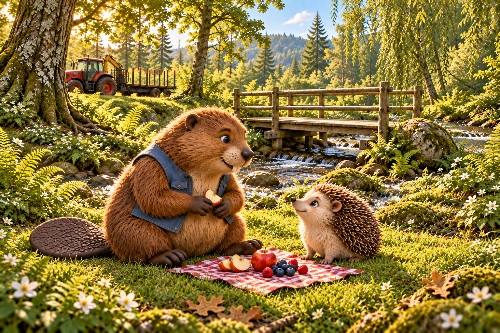
What I See
Inspected full image. Pass: Beaver LEFT, PinPin RIGHT on dry grass, modest friendly expressions, intact repaired bridge behind, empty trailer and folded crane in left background. Beaver has two attached forepaws holding an apple slice, two hind feet and one separate broad flat tail. PinPin has two short forepaws and partly visible near hind paw; far hind attachment is hidden. No duplicate visible limbs, no costume on PinPin, no twig reveal. Red-and-white checked picnic cloth with berries and apple pieces establishes prop continuity. Caveat: distant tractor appears beyond the stream on the left raised bank; image alone does not establish a same-bank route from scene 11, so geographic parking continuity is approximate.
Markdown record · Full-resolution image
{kind=link}
Exact Prompt
Use case: illustration-story. Create ONE finished landscape story illustration, exactly 1536 x 1024 pixels. Detailed dimensional woodland picture-book realism, tactile bark, fur, quills, moss and ferns. Keep rich green shade and gentle warm sunlight, no blown highlights. No text, speech bubbles, borders or panels. Reference 1 is the clean picnic location; preserve its bank and completed bridge in the middle background. Reference 2 supplies the cast and tractor. Identity: Mr. PinPin is a small natural hedgehog about 25 cm long, compact brown quills, cream muzzle, belly and short paws, glossy dark eyes and a gentle curious face. He has exactly two forelegs below his chest and two hindlegs below his haunches, far limbs may be naturally occluded. No clothes or golden ornament. Beaver has warm chestnut fur, small round ears, two small incisors, broad flat scaly tail emerging once from his rump, a simple blue work vest, natural rounded non-human animal body with two forelimbs and two hindlimbs. Beaver is roughly twice PinPin's body length, not a human in fur. Tail is not an extra leg. Match the cast reference closely. Natural modest expressions, no huge cartoon grin. Place the entire cast together on dry soft grass in the foreground: Beaver sits naturally at LEFT, broad flat tail resting behind toward left, and much smaller PinPin sits naturally at RIGHT, looking toward Beaver. A small simple folded picnic cloth between them holds a few berries and apple pieces. Beaver's two short forepaws and two hind feet are readable, not human arms and legs. PinPin's short natural paws attach correctly below chest and haunches. Relaxed, quietly pleased faces. Do not show either animal eating a twig yet; no twig visible anywhere among picnic objects. Keep the repaired little bridge intact and visible behind them toward centre-right, with every deck board present. Add the same red tractor with yellow crane folded neatly and coupled completely EMPTY timber trailer, parked far away on dry LEFT-background ground on this SAME bank; it is small in frame, off the bridge, cab unoccupied. No load remaining in trailer, no suspended timber. The stream runs behind the characters below their bank, with fern/moss/oak/willow continuity. Soft late-afternoon light matching plate, rich readable textures. This is a medium-wide picnic establishment, characters are the foreground focus.
References
- picnic.png: Same repaired footbridge and picnic bank, late-afternoon light.
- scene-03.png: Shared cast identity, relative scale, blue vest and tractor design.
Generation 22 / Reading position 16
A mysterious crunch
Beaver chews, but the food is hidden below the frame.
Camera. Tight beaver head portrait at his eye height, looking slightly RIGHT toward off-camera PinPin.
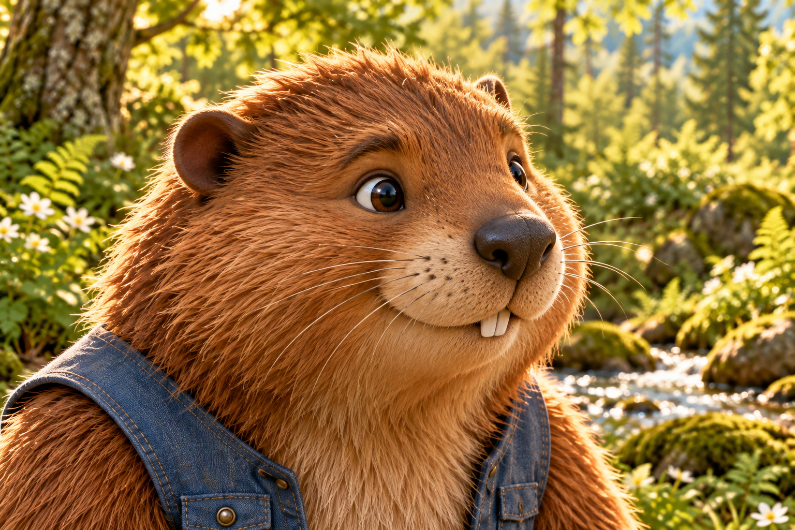
What I See
Inspected full image. Pass: genuine tight Beaver head-and-upper-vest portrait, gaze camera RIGHT, mouth nearly closed with two small incisors and subtle rounded cheeks. No food, twig, paw, PinPin or machinery visible. Blue vest, chestnut fur and rounded ears match cast anchor; natural warm expression avoids exaggerated joke face. Body and limbs intentionally below crop, anatomy not assessable beyond shoulders. The hidden food preserves the reveal.
Markdown record · Full-resolution image
{kind=link}
Exact Prompt
Use case: illustration-story. Create ONE finished landscape story illustration, exactly 1536 x 1024 pixels. Detailed dimensional woodland picture-book realism, tactile bark, fur, quills, moss and ferns. Keep rich green shade and gentle warm sunlight, no blown highlights. No text, speech bubbles, borders or panels. Reference 1 supplies only picnic light and woodland color; reference 2 supplies ONLY Beaver identity for this image. Do not include PinPin or tractor. Identity: Mr. PinPin is a small natural hedgehog about 25 cm long, compact brown quills, cream muzzle, belly and short paws, glossy dark eyes and a gentle curious face. He has exactly two forelegs below his chest and two hindlegs below his haunches, far limbs may be naturally occluded. No clothes or golden ornament. Beaver has warm chestnut fur, small round ears, two small incisors, broad flat scaly tail emerging once from his rump, a simple blue work vest, natural rounded non-human animal body with two forelimbs and two hindlimbs. Beaver is roughly twice PinPin's body length, not a human in fur. Tail is not an extra leg. Match the cast reference closely. Natural modest expressions, no huge cartoon grin. A TRUE TIGHT PORTRAIT of Beaver's head and top of blue vest at the picnic, a 75mm portrait lens feel at beaver eye height. Beaver's face fills most of the frame, top of head comfortably inside upper edge, bottom edge cuts just below the upper vest/chest. He faces gently toward camera-RIGHT where PinPin sits OFF CAMERA. His mouth is nearly closed as he calmly chews, cheeks only subtly rounded, two small incisors just visible. Warm amused eyes, understated expression, no huge teeth or stretched mouth. The food item is completely BELOW the lower image edge, as are both paws. No twig, stick, leaf, food fragment or object appears at the lips or anywhere in frame. No PinPin, animal silhouette, reflection or duplicate character. No hand enters frame. Background is softly separated natural green of the SAME streamside bank with afternoon light, not an identifiable twig reveal. No wide landscape composition; only head, neck and upper vest. No text or crunch lettering.
References
- picnic.png: Same repaired footbridge and picnic bank, late-afternoon light.
- scene-03.png: Shared cast identity, relative scale, blue vest and tractor design.
Generation 23 / Reading position 9
Travel Portrait: PinPin Face Correction
User identified PinPin's malformed small face in the travel frame; preserve all other scene content.
Camera. Exact original travel framing, no camera changes.
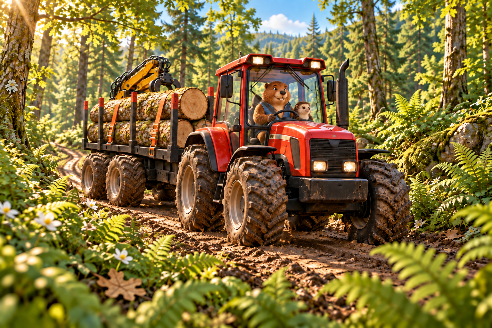
What I See
Selected after the user's face correction request and independent enlarged review. PinPin's lower muzzle/mouth is clearer, with coherent eyes and single nose; body, composition and other subjects appear preserved, not pixel-identical certified. His tiny front-facing face remains less elongated than the larger profile reference. The user explicitly said the rest of this travel scene was fine; vehicle design details are therefore retained unchanged.
Markdown record · Full-resolution image
{kind=link}
Exact Prompt
Edit reference 1 only. Correct ONLY the small hedgehog Mr. PinPin's FACE, visible through the windshield to the right of the beaver. Use reference 2's clear PinPin face as the identity reference: soft cream fur, a gently projecting tapered hedgehog muzzle, one small dark nose at the snout tip, two correctly placed glossy dark eyes, small rounded ears, and a subtle friendly closed-mouth expression. His face must read as a coherent miniature version of that hedgehog, not a flat humanlike face or a patch of separate features. Keep his exact head size, head position, gaze direction, quills, body, passenger seat and belt. Preserve the beaver exactly, and preserve the entire tractor, trailer, logs, straps, crane, lighting, colors, camera and forest exactly as in reference 1. This is a localized facial repair, not a redesign or rerender of the scene. Output the complete original landscape1536x1024 with only this small face corrected, no text.
References
- scene-09.png: Edit target; everything except PinPin's face must remain unchanged.
- scene-05.png: PinPin face identity only; do not copy this camera or change beaver.
Generation 24 / Reading position 17
PinPin's question
PinPin wonders whether that woody crunch is lunch or the bridge.
Camera. Tight reverse hedgehog portrait at his eye height; eyes and nose point camera LEFT to off-screen Beaver.

What I See
Inspected full image. Pass: true tight solo PinPin head/shoulders portrait, head gently tilted, nose and eyes directed camera LEFT toward off-screen Beaver. Curious understated smile, natural cream muzzle and brown quills, no costume, no other character or twig visible. Fore/hind limbs intentionally outside frame and cannot be assessed. Highlight texture retained on muzzle and quills. Reverse eyeline pairs correctly with Beaver looking right in scene 16.
Markdown record · Full-resolution image
Exact Prompt
Use case: illustration-story. Create ONE finished landscape story illustration, exactly 1536 x 1024 pixels. Detailed dimensional woodland picture-book realism, tactile bark, fur, quills, moss and ferns. Keep rich green shade and gentle warm sunlight, no blown highlights. No text, speech bubbles, borders or panels. Reference 1 supplies picnic light and bank foliage ONLY. Reference 2 supplies ONLY PinPin identity. SOLO HEDGEHOG portrait, no beaver or other animal. Identity: Mr. PinPin is a small natural hedgehog about 25 cm long, compact brown quills, cream muzzle, belly and short paws, glossy dark eyes and a gentle curious face. He has exactly two forelegs below his chest and two hindlegs below his haunches, far limbs may be naturally occluded. No clothes or golden ornament. Beaver has warm chestnut fur, small round ears, two small incisors, broad flat scaly tail emerging once from his rump, a simple blue work vest, natural rounded non-human animal body with two forelimbs and two hindlimbs. Beaver is roughly twice PinPin's body length, not a human in fur. Tail is not an extra leg. Match the cast reference closely. Natural modest expressions, no huge cartoon grin. Cut to a true tight reverse portrait of small PinPin at the picnic. Put camera at his low eye height, with a gentle 75mm portrait lens feel. His head, quill-covered shoulders and upper cream chest fill the frame; lower body and paws remain below lower edge. He tilts his head just a little, eyes and nose pointing clearly toward CAMERA LEFT, where his friend Beaver is OFF SCREEN. Curious affectionate puzzlement, subtle small smile, mouth nearly closed, no theatrical shock or huge grin. Keep compact brown quills, cream muzzle, tiny rounded ears and glossy eyes identical to reference 2, natural small hedgehog proportions, no costume or ornament. The reverse background is softly separated fern-and-grass near-bank foliage with the same gentle late-afternoon lighting. It need not show the bridge because this is a close conversation cut. Beaver is entirely outside the picture, and the mysterious food remains hidden. Absolutely no twig, stick, food held up, animal reflection, speech text or lettering. Do not use a wide two-character composition. Eyeline LEFT is essential.
References
- picnic.png: Same repaired footbridge and picnic bank, late-afternoon light.
- scene-10-v2.png: PinPin identity only, not original location.
Generation 25 / Reading position 6
Scene 06: Beaver identity correction
The beaver safely operates the crane while PinPin stays in his passenger seat.
Camera. Preserve the exact original frame, camera, perspective, exposure and composition.
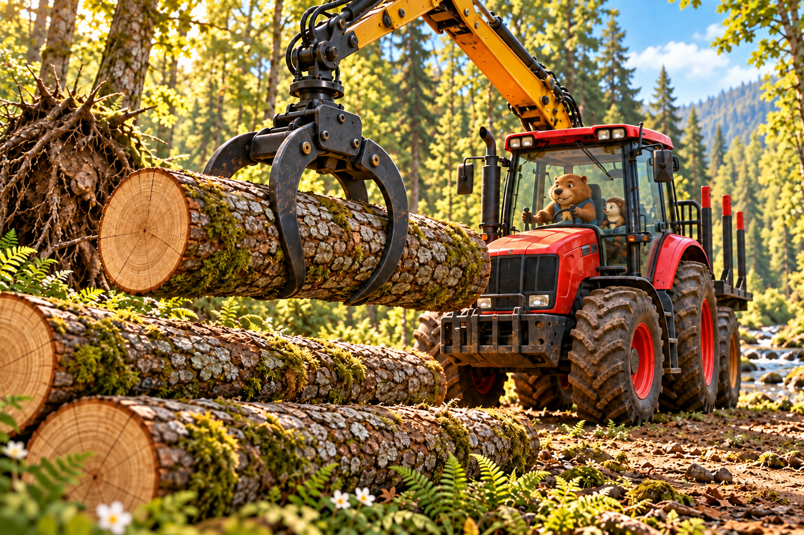
What I See
Compared the full 1536 x 1024 edit to scene-06.png and the scene-03 identity reference. The cab driver's muzzle is broader, and small pale incisors are visible below it without exaggerated tooth size. Fine whiskers remain subtle at this distant scale; the portrait is not as unambiguous as the large scene-03 reference. Blue vest, paws at controls, seated body, PinPin's passenger position, lifted round log, dark grapple jaws, yellow boom, empty trailer, camera and woodland composition appear preserved. No new character or visible extra limb attachment. Visual comparison does not certify pixel-identical non-head regions or hidden anatomy. One correction call only; candidate for parent selection.
Markdown record · Full-resolution image
{kind=link}
Exact Prompt
Use case: identity-preserve. Make one restrained edit of reference image 1 (scene 06), preserving its entire landscape frame at 1536 x 1024. Reference image 2 (scene 03) is ONLY the established beaver identity, not a composition or pose reference. Correct the small driver's HEAD ONLY, in its existing cab position and at its existing scale and angle. Match scene 03's warm chestnut beaver face: a broad beaver muzzle, two small distinct natural incisors visible just below the upper lip, fine readable whiskers, small round ears, the same gentle capable expression. Keep teeth modest and proportionate, never huge cartoon teeth. Keep the blue work vest, body, paws, controls, seated posture and eyeline unchanged. The driver must read as the established beaver rather than a bear. Do not enlarge his head or move him closer to the camera. Do not add a visible tail through the cab. Outside the beaver head, preserve reference image 1 as faithfully as possible: PinPin's exact face, quills, body and passenger position; both characters safely inside the cab; red tractor, yellow boom, dark steel jaws, glass, wheels, stakes, existing logs and trailer load state, ground, trees, stream, composition, camera, focus, texture, highlights, shadows, exposure and color. No new characters, no new scene, no clothing or ornament on PinPin, no machinery redesign, no text, no crop and no lighting polish. This is a targeted visual-continuity correction.
References
- scene-06.png: Exact edit target: preserve the entire frame except the specified corrections.
- scene-03.png: Beaver head identity only: broad muzzle, small paired incisors, fine whiskers, chestnut fur and small round ears; do not copy pose, scale or scene.
Generation 26 / Reading position 18
His own willow twig
Beaver reveals his own lunch; the completed bridge remains intact behind them.
Camera. Medium two-shot back at original picnic orientation, Beaver LEFT and PinPin RIGHT, completed bridge background.
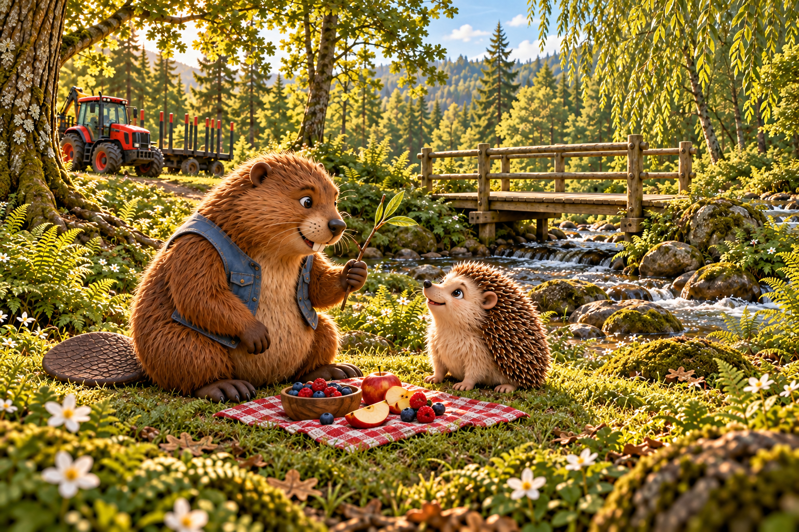
What I See
Inspected full image. Pass: Beaver LEFT raises his own separate willow twig, PinPin RIGHT looks up LEFT with a gentle small laugh, blue vest and natural small hedgehog retained. Repaired bridge clearly intact behind, red tractor with empty trailer in left background, red-and-white checked picnic cloth maintained. Beaver has two forelimb attachments, two hind feet and one separate broad flat tail; PinPin two forepaws and near hind paw visible with far hind attachment hidden. No confirmed duplicated limbs. Expressions modest, no exaggerated mouths. Minor prop drift: reveal twig larger than specified 15 cm, three narrow leaves rather than two, and a small berry bowl appears that was absent in scene 15. Tractor heading changes relative to scene 15 and same-bank parking geography remains approximate. Joke setup/reveal separation succeeds.
Markdown record · Full-resolution image
{kind=link}
Exact Prompt
Use case: illustration-story. Create ONE finished landscape story illustration, exactly 1536 x 1024 pixels. Detailed dimensional woodland picture-book realism, tactile bark, fur, quills, moss and ferns. Keep rich green shade and gentle warm sunlight, no blown highlights. No text, speech bubbles, borders or panels. Reference 1 establishes the repaired bridge picnic location; reference 2 establishes cast identity and scale. Identity: Mr. PinPin is a small natural hedgehog about 25 cm long, compact brown quills, cream muzzle, belly and short paws, glossy dark eyes and a gentle curious face. He has exactly two forelegs below his chest and two hindlegs below his haunches, far limbs may be naturally occluded. No clothes or golden ornament. Beaver has warm chestnut fur, small round ears, two small incisors, broad flat scaly tail emerging once from his rump, a simple blue work vest, natural rounded non-human animal body with two forelimbs and two hindlimbs. Beaver is roughly twice PinPin's body length, not a human in fur. Tail is not an extra leg. Match the cast reference closely. Natural modest expressions, no huge cartoon grin. Return to a MEDIUM TWO-SHOT at the same picnic orientation, camera 30 cm above the grass. Beaver LEFT, small PinPin RIGHT, both naturally seated on dry bank. Beaver holds up his OWN little willow twig in ONE short forepaw in front of his chest, a clearly separate slender 15 cm twig with two small willow leaves at its tip. It came from his picnic lunch, not from the bridge. His other forepaw rests beside the picnic cloth; two hind feet below his rounded body and ONE broad flat tail behind left. Modest friendly knowing smile, two small incisors, natural non-human anatomy. PinPin looks up LEFT toward Beaver and the twig with an affectionate little laugh, mouth only slightly open, eyes warm, no manic expression. His small short paws remain naturally on grass, anatomically attached. A simple small red-and-white checked picnic cloth with a few berries and apple pieces sits between them, coherent with a quiet woodland picnic. The SAME completed wooden footbridge remains clearly visible and intact in background centre-right, every board and both rails sound, no chewing damage, no broken or missing timber. Red tractor and completely EMPTY trailer are parked small in far LEFT background on dry near-bank land, crane folded, not on bridge. Soft late-afternoon light, detailed green shade and warm fur, no blown highlights. This is the first and only visible twig reveal. No text, speech balloons or lettering.
References
- picnic.png: Same repaired footbridge and picnic bank, late-afternoon light.
- scene-03.png: Shared cast identity, relative scale, blue vest and tractor design.
Generation 27 / Reading position 7
Scene 07: Beaver identity correction
The beaver safely operates the crane while PinPin stays in his passenger seat.
Camera. Preserve the exact original frame, camera, perspective, exposure and composition.
What I See
Compared the full 1536 x 1024 edit with scene-07.png and scene-03.png. The overall rear three-quarter loading frame is retained: two round logs on the trailer, a third held above it, the same red tractor/yellow crane/dark jaws, blue-vested driver and PinPin together inside the cab. The small driver portrait changed only subtly; a pale mouth detail is visible, but two separate incisors and fine whiskers are not confidently resolved at full-frame scale. The species-readability concern is therefore not fully settled, and this candidate should not be described as a verified complete face correction. No enlarged cartoon teeth, new character or obvious pose/machinery-state change. Some bark/surface detail varies outside the head; pixel-identical preservation is not claimed. One correction call only, as requested; parent decides selection.
Markdown record · Full-resolution image
{kind=link}
Exact Prompt
Use case: identity-preserve. Make one restrained edit of reference image 1 (scene 07), preserving its entire landscape frame at 1536 x 1024. Reference image 2 (scene 03) is ONLY the established beaver identity, not a composition or pose reference. Correct the small driver's HEAD ONLY, in its existing cab position and at its existing scale and angle. Match scene 03's warm chestnut beaver face: a broad beaver muzzle, two small distinct natural incisors visible just below the upper lip, fine readable whiskers, small round ears, the same gentle capable expression. Keep teeth modest and proportionate, never huge cartoon teeth. Keep the blue work vest, body, paws, controls, seated posture and eyeline unchanged. The driver must read as the established beaver rather than a bear. Do not enlarge his head or move him closer to the camera. Do not add a visible tail through the cab. Outside the beaver head, preserve reference image 1 as faithfully as possible: PinPin's exact face, quills, body and passenger position; both characters safely inside the cab; red tractor, yellow boom, dark steel jaws, glass, wheels, stakes, existing logs and trailer load state, ground, trees, stream, composition, camera, focus, texture, highlights, shadows, exposure and color. No new characters, no new scene, no clothing or ornament on PinPin, no machinery redesign, no text, no crop and no lighting polish. This is a targeted visual-continuity correction.
References
- scene-07.png: Exact edit target: preserve the entire frame except the specified corrections.
- scene-03.png: Beaver head identity only: broad muzzle, small paired incisors, fine whiskers, chestnut fur and small round ears; do not copy pose, scale or scene.
Generation 28 / Reading position 10
A Bridge for Paws
The stream and broken footbridge appear through the windscreen; the tractor stays on land.
Camera. Insidecabbehindseats, driverleftandPinPinrightforegroundbacks, windshieldtowardstreambridgeoffright.
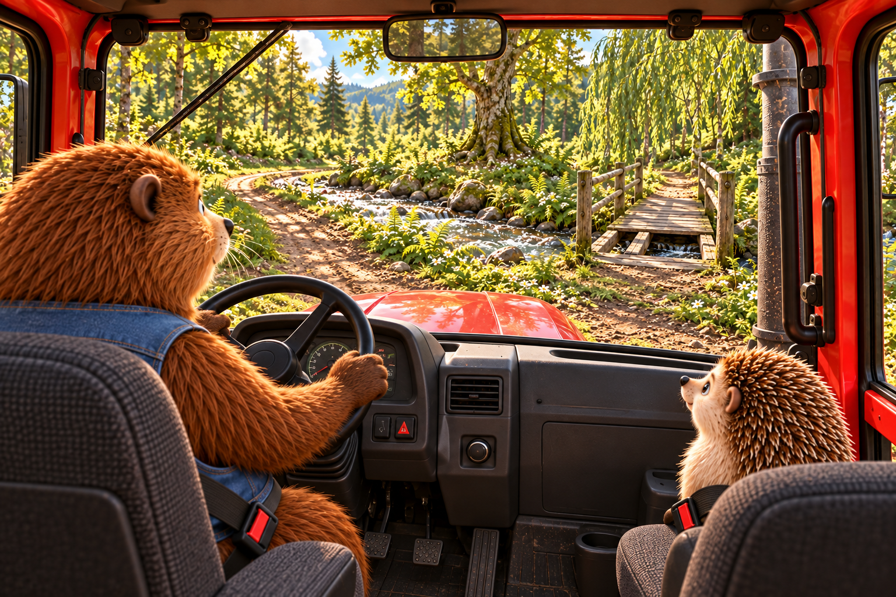
What I See
Accepted destination viewpoint: camera behind the two separate belted seats, bridge ahead-right with missing boards, access track stays on bank left. PinPin's profile retains a clear pointed muzzle and cream face. Beaver has two forelimbs at controls; lower limbs hidden. PinPin glances toward the driver rather than staring directly at bridge, a reaction within the same discovery beat.
Markdown record · Full-resolution image
{kind=link}
Exact Prompt
Use case: illustration-story. Move the camera INSIDE the red tractor cab to just behind the seats, looking forward through the broad windshield. The lower LEFT foreground shows the back and slight whiskered profile of the chestnut beaver driver in his blue vest, two forepaws at the wheel. The lower RIGHT foreground shows little brown-quilled cream-faced PinPin in his separate small passenger seat, head raised to look out. Keep their lap belts and relative size from reference 3. The windshield view is the destination from reference 2: a gentle narrow forest stream and its SMALL pedestrian wooden footbridge with three missing boards near its entrance. Arrange the bridge ahead to the RIGHT of the red hood; the tractor's dirt access track turns LEFT onto firm open bank, clearly NOT aligned to drive over the footbridge. Give the outside landscape most of the frame: sparkling shallow water, fern edges, willow leaves and the readable gap in the bridge deck. Preserve reference 1's cab materials and steering arrangement while changing camera physically, not just cropping. Midday soft light, detailed dimensional woodland children's-book realism. No extra limbs or characters; whole scene1536x1024, no lettering or panels.
References
- cab.png: Cleaninteriorlayoutandredhood.
- bridge.png: Destinationgeographyandbrokenfootbridge.
- scene-05.png: Beltedcharactersleftdriver/rightpassengeridentities.
Generation 29 / Reading position 11
Scene 11: Beaver identity and delivered-log continuity
Delivered timber remains on the bank beside the broken footbridge, before sawing or fitting.
Camera. Preserve the exact original frame, camera, perspective, exposure and composition.
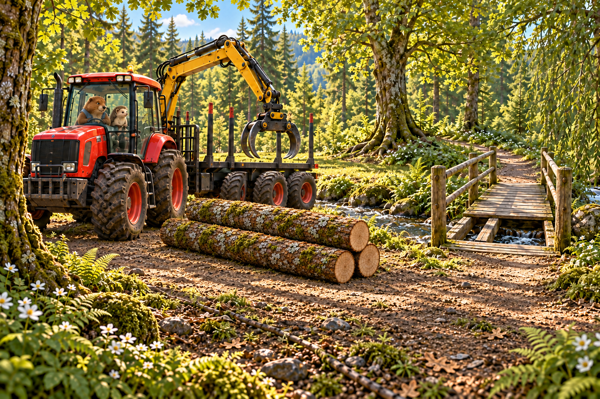
What I See
Compared the full 1536 x 1024 output with scene-11.png, scene-03.png and the scene-08 cargo reference. The bank pile is now exactly three long cylindrical bark-covered logs, two below and one above, with three round cut ends visible. No squared cargo beams, loose cargo planks or short rounds remain. All cargo rests on the dry bank; the trailer is empty and the raised grapple is open and empty. The broken small footbridge retains its missing near decking, and the tractor remains parked on land. This resolves the clear round-log versus squared-timber cargo-form discrepancy; exact physical dimensions cannot be recovered from these different views. The cab driver's face changed only subtly: muzzle and a small pale tooth detail are visible, but two separate incisors and fine whiskers are not confidently verified at this scale. Treat face identity as a remaining review concern, not a conclusively solved issue. PinPin, blue vest, cab positions, machinery, framing and lighting appear preserved overall, with local texture variation; no claim of pixel identity. One correction call only; recommend parent review this sibling for the clear cargo improvement.
Markdown record · Full-resolution image
{kind=link}
Exact Prompt
Use case: identity-preserve and precise-object-edit. Make one restrained edit of reference image 1 (scene 11), preserving its entire landscape frame at 1536 x 1024. Reference image 2 (scene 03) is ONLY the established beaver identity, not a composition or pose reference. Reference image 3 (scene 08) is ONLY the delivered cargo form. Correct the small driver's HEAD ONLY, in its existing cab position and at its existing scale and angle. Match scene 03's warm chestnut beaver face: a broad beaver muzzle, two small distinct natural incisors visible just below the upper lip, fine readable whiskers, small round ears, the same gentle capable expression. Keep teeth modest and proportionate, never huge cartoon teeth. Keep the blue work vest, body, paws, controls, seated posture and eyeline unchanged. The driver must read as the established beaver rather than a bear. Do not enlarge his head or move him closer to the camera. Do not add a visible tail through the cab. Only one additional correction: replace the entire existing mixed bank pile of squared beams, planks and short rounds with EXACTLY THREE full-length cylindrical oak logs matching the large round bark-covered logs in reference image 3. Two logs below and one above, lying together on the same dry bank in the existing pile area; preserve their natural bark, pale round cut ends, moss/lichen and full long length. These are the transported windfallen logs, not yet sawn into bridge boards. All three logs are entirely on land, clear of the stream and bridge. Remove every squared plank, beam and short round from the cargo pile. All delivered cargo must remain on the BANK; the tractor's trailer remains completely EMPTY and the raised grapple remains OPEN and empty. Keep the broken footbridge exactly broken as in image 1, including its missing approach decking; this is before repair. Tractor stays parked on land and never on the footbridge. Outside the beaver head and the cargo pile, preserve reference image 1 as faithfully as possible: PinPin's exact face, quills, body and passenger position; both characters safely inside the cab; red tractor, yellow boom, dark steel jaws, glass, wheels, stakes, empty trailer, ground, trees, stream, composition, camera, focus, texture, highlights, shadows, exposure and color. No new characters, no new scene, no clothing or ornament on PinPin, no machinery redesign, no text, no crop and no lighting polish. This is a targeted visual-continuity correction.
References
- scene-11.png: Exact edit target: preserve the entire frame except the specified corrections.
- scene-03.png: Beaver head identity only: broad muzzle, small paired incisors, fine whiskers, chestnut fur and small round ears; do not copy pose, scale or scene.
- scene-08.png: Cargo form only: three full-length round bark-covered oak logs; do not copy the loaded trailer or straps.
Generation 30 / Reading position 14.1
Mama and baby PomPom arrive
Mama brings baby Mr. PomPom to the picnic clearing after the bridge is repaired.
Camera. Hedgehog eye height, 50cm above meadow, looking along bank path toward the newly repaired bridge.
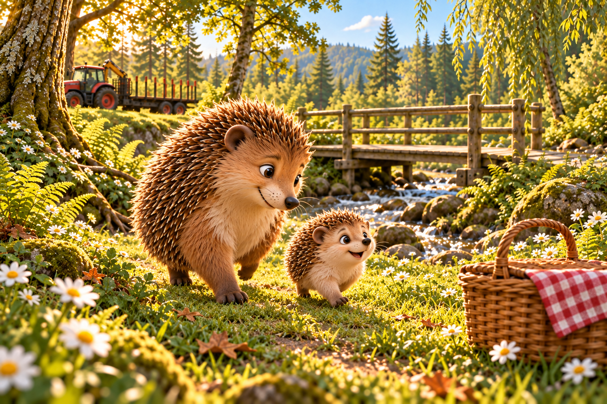
What I See
Inspected the actual PNG beside original image55. Mama has a longer muzzle and a clearly larger adult silhouette; PomPom has a shorter round face, readable eyes and an open smile. Brown quills and cream fur establish the modern adapted family identity. Image55 supplies mother-child proportions and warmth only, not a fixed canonical modern Mama design. Mama looks down toward the baby; the repaired bridge and distant empty trailer read clearly. No confirmed duplicate forelimb attachments: Mama's near foreleg and raised far forepaw are plausible, but fur and body overlap hide parts of the shoulder and hindlimb anatomy. Baby's far limbs are also partly hidden by body and grass, so all four attachments cannot be certified. The baby is visibly smaller, but the requested one-third body-length ratio is not demonstrated precisely. Unapproved candidate awaiting user review.
Markdown record · Full-resolution image
{kind=link}
Exact Prompt
Use case: illustration-story. Create a new 1536 x 1024 landscape illustration in the dimensional woodland storybook rendering of reference 2. Camera at hedgehog eye height on the grassy bank path, nearer the arriving family. Reference 1 gives Mama's pointed muzzle, warm maternal expression, taller adult silhouette and strong mother-child size contrast, translated into the fine brown quills and cream fur of PinPin in reference 2. Mama PinPin walks gently toward the picnic meadow with baby Mr. PomPom immediately beside her. PomPom is a tiny round baby version of PinPin, equivalent to a one-year-old: short baby muzzle, softly rounded face, small delicate quills, tiny paws, about one third Mama's body length. Mama looks down affectionately at him; he looks eagerly ahead. Natural four-limbed hedgehog bodies, walking close to the grass, unclothed. A small wicker picnic basket rests on the grass ahead of them. Only these two characters appear in this shot. The same repaired wooden footbridge crosses the shallow stream behind; the red timber tractor with empty trailer and folded yellow crane is parked far left. Rich ferns, daisies, moss, dappled late afternoon light, controlled detailed highlights. Warm storybook faces, clear readable eyes. No lettering.
References
- image55.png: Original mother-and-child proportions and family warmth only; translate to modern dimensional style.
- scene-15.png: Exact woodland location, light, rendering and PinPin family facial identity; not the picnic staging.
{kind=link}
Generation 31 / Reading position 14.2
A little driver and Mama's applause
PinPin tries the steering wheel while Beaver supervises with the tractor parked; Mama applauds and baby watches.
Camera. Side three-quarter medium-wide view of the open cab and grassy verge, camera just below cab sill, clear view of faces.
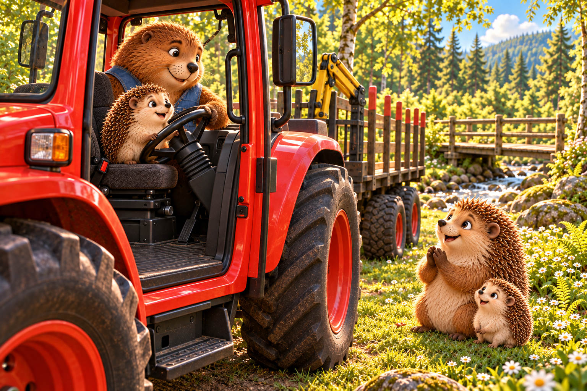
What I See
Inspected the actual PNG. All four faces are readable; PinPin's muzzle and eyes look coherent at the wheel, and Beaver retains his blue vest, broad muzzle and small incisors. Mama and PomPom retain the brown-quill/cream-fur family identity, with Mama's longer muzzle and the baby's rounded face. Mama has two forepaws together in applause and two feet below; no confirmed duplicate forelimb attachments are visible. PinPin's paws at the wheel and feet on the seat are distinguishable, but the steering rim, fur and cab obscure joints; Beaver's hidden limbs and the baby's overlapping paws remain unverified. Mama and baby are on the grass beside the wheels; exact clearance and scale cannot be established from perspective. This is supervised steering in a parked tractor, not actual driving. The empty trailer, folded crane and lack of visible motion support that staging, but engine-off state cannot be proved from a still. PinPin looks upward/right rather than making an unmistakable eyeline to Mama. Unapproved candidate awaiting user review.
Markdown record · Full-resolution image
{kind=link}
Exact Prompt
Use case: illustration-story. New landscape 1536 x 1024 frame in the same richly detailed dimensional woodland book style. Move camera outside the parked red tractor, a three-quarter view through its open cab doorway, wide enough to include the grassy verge at right. Little Mr. PinPin now sits securely on the driver's seat with his two small front paws on the steering wheel. The blue-vested Beaver sits immediately beside him, smiling and guiding with one paw gently on the wheel. Use reference 1 for their exact appealing faces and machinery design. The tractor is stationary, engine off, unlit dashboard and headlights, empty timber trailer, folded yellow crane. On the grass at right, safely away from the wheels, Mama from reference 2 sits on her haunches and brings her TWO front paws together in delighted applause, looking up toward PinPin. Tiny baby PomPom sits immediately beside her, gazing up with delight. Match their faces and brown quills/cream fur to reference 2; baby is less than half PinPin's size and about one third Mama's body length. Four characters total, readable natural compact bodies and clear faces. Intact footbridge and stream behind, sunny ferns and daisies, balanced soft highlights. PinPin looks proudly toward Mama. Keep character scale plausible against the tractor; compose closer to the cab so PinPin's face reads clearly. No text.
References
- scene-05.png: PinPin and Beaver face identities, red cab and steering controls.
- scene-19.png: Mama and tiny baby identity and family scale; woodland picnic location.
Generation 32 / Reading position 15
Everyone joins the picnic
Mama and baby join PinPin and Beaver for the picnic after the steering lesson.
Camera. Preserve scene15's picnic-eye-height camera and full landscape; extend the group naturally across the grassy foreground.
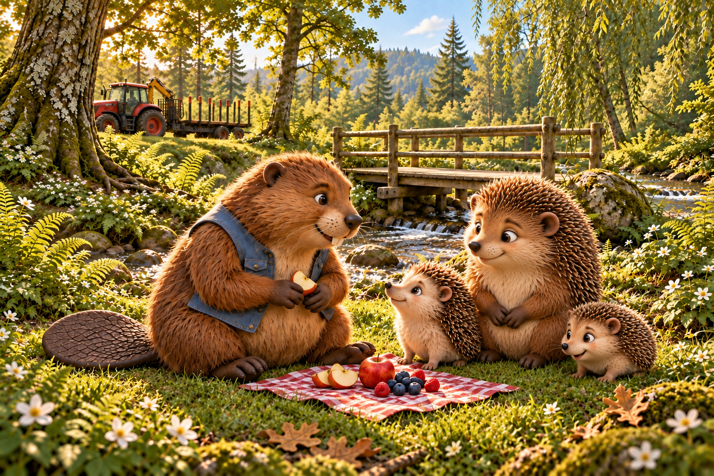
What I See
Inspected the actual PNG. Four clear faces surround the picnic: Beaver left, PinPin beside him, larger Mama and smaller PomPom at right. Mama's longer muzzle, brown quills and cream fur remain recognizable from scene-19, though her seated face is rounder. PomPom remains smaller than PinPin but appears closer to two-thirds his visible height than the requested half, with more prominent quills; the baby reads somewhat older here. Perspective and posture limit precise scale comparison. Mama has two forepaws in her lap and two hind feet below; Beaver's two hands hold the apple. No confirmed duplicated forelimb attachments are visible, but fur, body overlap and grass conceal parts of the small hedgehogs' shoulders and hind limbs. Faces are appealing and coherent; the intact bridge, distant empty tractor and picnic food remain readable without the willow-twig reveal. Unapproved candidate awaiting user review.
Markdown record · Full-resolution image
{kind=link}
Exact Prompt
Use case: compositing. Edit reference 1, the woodland picnic, adding Mama PinPin and baby Mr. PomPom from reference 2 to the grass on the RIGHT of little PinPin. Keep existing Beaver on the left and existing PinPin unchanged, including their faces. Mama sits warmly beside PinPin, around one-and-a-half times his seated height; baby PomPom nestles next to her, half PinPin's height, very round with tiny muzzle and baby quills. Mama looks toward her proud son; baby watches the picnic fruit. Mama's two front paws rest naturally together in her lap; two hind paws support her haunches. Baby has a small natural four-limbed hedgehog body. Make enough space for the two newcomers at the right within this same wide frame without covering PinPin. Preserve the red-and-white cloth, apple slices, berries, intact footbridge, distant empty parked tractor and folded yellow crane, forest, stream, camera height, detailed fur/quills, gentle dimensional faces and existing exposure. Four characters in total. Soft shaded cream fur with retained detail, no brightening pass, no lettering. Landscape 1536 x 1024.
References
- scene-15.png: Edit target; preserve Beaver and PinPin, picnic, location and lighting.
- scene-19.png: Mama and baby character identities only.
Generation 33 / Reading position 18
The family hears Beaver's punchline
The willow twig, not the bridge, is Beaver's snack; Mama and both little hedgehogs share the joke.
Camera. Keep final18's eye-height wide picnic framing; accommodate Mama and baby on the right.
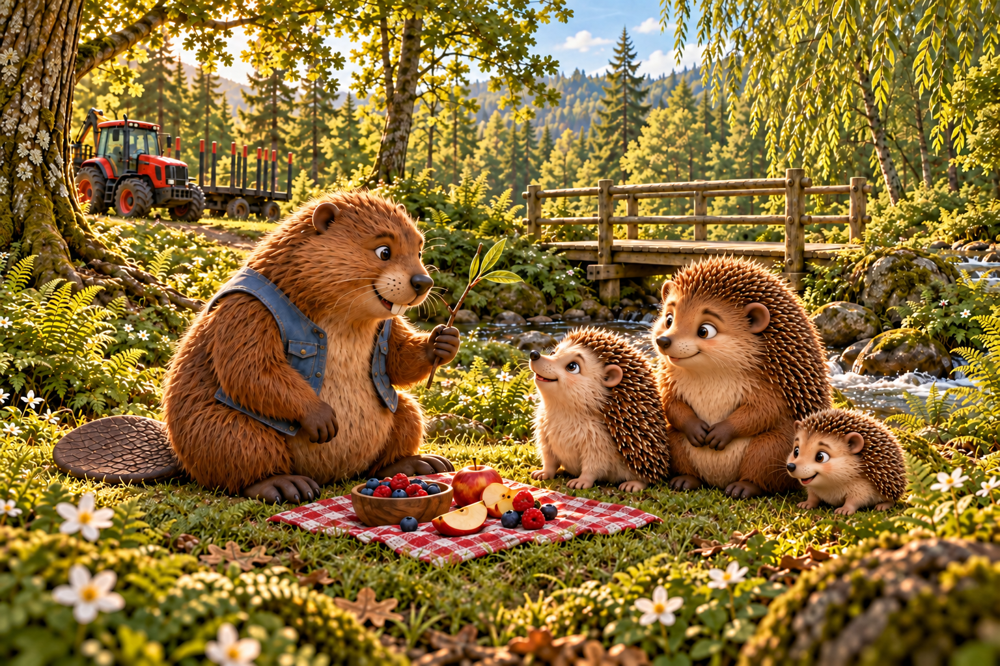
What I See
Inspected the actual PNG against scene-15-v2. Mama and PomPom retain the picnic faces, brown quills, cream fur and right-side placement; Mama is larger than PinPin and PomPom smaller. All four faces are coherent and readable. PinPin looks up toward Beaver, who holds a clearly visible single leafy twig with modest incisors visible; the intact bridge and empty parked trailer remain in view. Mama's two forepaws meet in her lap with two hind feet below. Beaver has one hand on the twig and one lowered; no confirmed duplicate forelimb attachments are visible. PinPin and the baby have plausible visible front limbs, but fur, body overlap and grass conceal parts of their shoulder and hindlimb attachments, so a complete anatomy count cannot be certified. PomPom remains a round smaller hedgehog, but relative size varies from the arrival and steering scenes; the images do not prove a specific baby age or exact proportion. This preserves the family picnic identity more closely than the original two-character finale, without establishing a canonical fixed Mama design. Unapproved candidate awaiting user review.
Markdown record · Full-resolution image
{kind=link}
Exact Prompt
Use case: compositing. Edit reference 1, the final willow-twig joke, to include Mama PinPin and baby Mr. PomPom in the same places to PinPin's right as in reference 2. Reference 2 is the precise family-cast reference: same Mama face and size, same tiny round baby, same relation to little PinPin. Beaver stays left holding his single leafy willow twig, smiling with his two small incisors. PinPin stays next to him, laughing and looking at Beaver's face. Mama smiles warmly at the joke, both forepaws together in her lap, seated on two hind paws. Baby sits beside her and looks joyfully at his older brother. Keep all FOUR characters readable in the wide picnic scene. Preserve reference 1's whole twig, checked cloth, berries, wooden bowl, apples, repaired intact bridge, stream, red tractor with empty trailer, forest and gentle detailed golden lighting. Baby smaller than PinPin, Mama larger than PinPin; both match reference 2. Keep natural hedgehog faces, compact bodies and detailed brown quills. No lettering, no exposure increase, no added props. Landscape 1536 x 1024.
References
- scene-18.png: Edit target; keep the willow-twig reveal, Beaver and laughing PinPin.
- scene-15-v2.png: Family faces, relative sizes and Mama/baby picnic placement.
Source and Process
Original standalone fiction inspired by the friendly farm story, using the main-book camera-first workflow.
Original Story and Visual References
This is new fiction, not a chapter of the original book. The farm story informs the warm friendship and vehicle-discovery rhythm. The beaver replaces the farm bear as the driver for this standalone adventure.
The approved title image fixes the red tractor, yellow crane and main-book PinPin design. Clean locations branch from that visual anchor. The missing bridge boards, windfallen wood and willow-twig joke are story inventions approved in outline.
Original Mama illustration image55 supplies mother-child proportions and family warmth. Scene-19 adapts that reference to the modern brown-quill and cream-fur rendering; it does not establish a fixed canonical Mama design. Later family scenes use that adapted identity.
Scene-19 (family arrival) and scene-20 (supervised steering with the tractor parked, not actual driving) are inserted after scene-14 and before the picnic. Scene-15-v2 and scene-18-v2 replace the two earlier picnic images. Six superseded candidates remain in the journal: scene-06, scene-07, scene-09, scene-11, scene-15 and scene-18. Five additional successful outputs are intermediate environment plates.
Original Mama proportion reference Standalone story and translations Approved cover Authorship and pacing notes
The Method, in Order
- Extend the original eighteen-scene story to twenty scenes in English, Spanish and Russian with two family insertions before the picnic.
- Generate clean environments using camera position, direction and scene state.
- Establish the beaver and PinPin together, then add each scene's full cast directly without colored-limb blocking.
- Inspect scale, faces, limb attachments, eyelines, crane/load state and bridge continuity.
- Compose vertical reading and explicit print pages, separating joke setup from reveal.
- Verify local and published reader, multilingual text and PDF; preserve prompts and all attempts.
Story, Camera and Correction Plan
- Mr. PinPin and the Timber Tractor 20 cm above the trail, moderate 35mm view; PinPin near foreground and parked tractor middle distance, pale upper sky reserved for title.
- Timber Tractor: Spanish cover Preserve the approved portrait composition and framing exactly.
- Timber Tractor: Russian cover Preserve the approved portrait composition and framing exactly.
- The Tractor Around the Bend 30 cm camera, 5 m front-left oftractor; fullmachineatright, emptycharacterpatchleft.
- A New Driver Same low front-left meeting plate; characters in foregroundleft notundertractor.
- Inside the Cab View through open right cab door at seatheight looking diagonally toward frontleft windshield.
- A Seat Beside the Driver Same cabplate camera, closer view of passengers fromopenright doorway while parked.
- The Clearing for the Crane Camera1mhighsideviewlookingalongriverbank, entiretractorlefttrailercenter logsright.
- A Very Useful Yellow Hand Moveclose tologpile at0.6m, grapplingloginforegroundleft, cabbackgroundright.
- One Log, Then Another Walkcamera8m torear-right sideoftrailer, slightlyelevated1.5mlookingacrossloadtocab.
- Wooden Passengers Closealongside trailerload at1.2m showing barkstraps stakes, cabnotinframe.
- The Woods Have Grown Shorter Moveofftrack intoferns at0.25m, frontthreequarterviewofapproachingtractor at6m distance.
- A Bridge for Paws Insidecabbehindseats, driverleftandPinPinrightforegroundbacks, windshieldtowardstreambridgeoffright.
- Travel Portrait: PinPin Face Correction Exact original travel framing, no camera changes.
- Empty forest track Camera 8 cm above the track, moderate wide view following the curve right. Ferns frame the foreground.
- Windfallen oak beside the stream Camera 35 cm above a streamside clearing, moderately wide. Exposed roots left; stream runs foreground-left toward background-right.
- Footbridge before repairs: clean location plate Near-bank approach camera, 45 cm high, 32mm view toward opposite bank. Bridge angles from centre foreground to centre-right background; near-bank dry parking LEFT.
- Upstream picnic bank: repaired bridge plate Move physically 2 metres upstream along the SAME near bank, lower to 25 cm, turn downstream toward the bridge. Foreground grass left/right, repaired bridge middle background.
- Unloading on firm ground Retreat 4 metres along near-bank track, 70 cm camera, 32mm wide. Parked tractor LEFT; damaged footbridge RIGHT.
- One gap for a small paw 35 cm camera, close medium view of near-end deck and dry bank; beaver LEFT and PinPin RIGHT.
- The short plank 45 cm near-bank camera, medium side-oblique shot. Beaver left at threshold, PinPin right behind on bank.
- First crossing Low 25 cm camera beside far-bank landing looking along bridge back toward near bank.
- Picnic by the stream 25 cm upstream near-bank picnic camera looking downstream. Beaver LEFT, PinPin RIGHT.
- A mysterious crunch Tight beaver head portrait at his eye height, looking slightly RIGHT toward off-camera PinPin.
- PinPin's question Tight reverse hedgehog portrait at his eye height; eyes and nose point camera LEFT to off-screen Beaver.
- His own willow twig Medium two-shot back at original picnic orientation, Beaver LEFT and PinPin RIGHT, completed bridge background.
- Scene 06: Beaver identity correction Preserve the exact original frame, camera, perspective, exposure and composition.
- Scene 07: Beaver identity correction Preserve the exact original frame, camera, perspective, exposure and composition.
- Scene 11: Beaver identity and delivered-log continuity Preserve the exact original frame, camera, perspective, exposure and composition.
- Mama and baby PomPom arrive Hedgehog eye height, 50cm above meadow, looking along bank path toward the newly repaired bridge.
- A little driver and Mama's applause Side three-quarter medium-wide view of the open cab and grassy verge, camera just below cab sill, clear view of faces.
- Everyone joins the picnic Preserve scene15's picnic-eye-height camera and full landscape; extend the group naturally across the grassy foreground.
- The family hears Beaver's punchline Keep final18's eye-height wide picnic framing; accommodate Mama and baby on the right.
Measured, Not Estimated
1605.7 seconds summed image-call wall time across 33 registered calls. This includes tool waiting, not just model computation. It excludes preparation, review, publishing and any undocumented earlier work. No monetary cost is exposed by these calls.
Records above follow actual generation time. Reading positions are recorded separately. Every attempt has its own filename and record; a retry is not counted as a successful one-shot.
Unsuccessful Requests
3 failed request(s), separate from successful image-call timings above. These requests did not produce an image.
- 2026-09-20T10:15:42.757Z: scene-13. image generation failed: network error: error sending request for url (https://chatgpt.com/backend-api/codex/images/edits). Exact start timestamp was not retained after the exec exception; not reconstructed. Failure record and exact prompt
- 2026-09-20T10:15:46.137Z: scene-08. image generation failed: network error sending request for images/edits; no output Failure record and exact prompt
- 2026-09-20T11:11:15.399Z: scene-18-v2. Built-in image generation network error; no image returned. Failure record and exact prompt
What This Run Tests
Clean landscape plates and concise camera direction establish each location before characters enter. Each scene's visible cast is added together from a shared identity reference, without colored-limb blocking.
Small faces inside a distant cab need enlarged review, not just a whole-image glance. The user identified PinPin's travel face as malformed; a targeted repair was reviewed and selected without redesigning the rest of that image.
Independent review caught softened beaver identity in cab views and squared timber appearing too early. Corrected versions are kept alongside the original candidates; the reader selects only the reviewed final paths.
A believable image is not proof of exact anatomy, machinery, load restraint or camera geometry. Hidden limbs stay unverified. Minor grille, hub and botanical variation is documented rather than described as perfect continuity.
The family review checks all four actual PNGs for Mama/baby identity, faces and duplicated forelimb attachments. No confirmed duplicate attachments were found, but concealed joints remain unverified. Baby size and apparent age vary; the picnic baby is larger relative to PinPin than the requested half-height. The finale broadly preserves the family picnic identity. Family approval remains with the user.
Approved Machinery Corrections
Miguel approved scenes 07, 09, 11 and 18 v3 for publication. These replace only the four corresponding images in the twenty-scene family edition. Original candidates and their historical pre-approval reviews remain available. Scene 07 still conceals lower pedestal support and the hitch; scene 09 still conceals the crane mounting and hitch. The separate cabin-seat proposal is not approved.
Approval and remaining caveats
Scene 07 approved image · Generation and review record
{kind=link}
Scene 09 approved image · Generation and review record
{kind=link}
{kind=link}
{kind=link}